23. Practical Exercise – Version 12
In this chapter, we will write a web application that follows the MVC (Model-View-Controller) architecture. The application will be able to return responses in three formats: JSON, XML, and HTML. There is a significant increase in complexity between what we are about to do and what we have done previously. We will reuse most of the concepts covered so far and detail all the steps leading to the final application.
23.1. MVC Architecture
We will implement the MVC (Model–View–Controller) architectural pattern as follows:

The processing of a client request will proceed as follows:
- 1 - Request
The requested URLs will be in the form http://machine:port/contexte/….?action=anAction¶m1=v1¶m2=v2&… The [Main Controller] will use a configuration file to "route" the request to the correct controller and the correct action within that controller. To do this, it will use the [action] field in the URL. The rest of the URL [param1=v1¶m2=v2&…] consists of optional parameters that will be passed to the action. The C in MVC here is the chain [Main Controller, Controller / Action]. If no controller can handle the requested action, the web server will respond that the requested URL was not found.
- 2 - Processing
- The selected action [2a] can use the parameters that the [Main Controller] has passed to it. These can come from several sources:
- the path [/param1/param2/…] of the URL,
- the URL parameters [param1=v1¶m2=v2],
- parameters posted by the browser with its request;
- When processing the user’s request, the action may require the [business] layer [2b]. Once the client’s request has been processed, it may trigger various responses. A classic example is:
- an error response if the request could not be processed correctly;
- a confirmation response otherwise;
- the [Controller / Action] will return its response [2c] to the main controller along with a status code. These status codes will uniquely represent the state of the application. They will be either success codes or error codes;
- The selected action [2a] can use the parameters that the [Main Controller] has passed to it. These can come from several sources:
- 3 - Response
- Depending on whether the client requested a JSON, XML, or HTML response, the [Main Controller] will instantiate [3a] the appropriate response type and instruct it to send the response to the client. The [Main Controller] will pass it both the response and the status code provided by the [Controller/Action] that was executed;
- if the desired response is of the JSON or XML type, the selected response will format the response from the [Controller/Action] that was provided to it and send it [3c]. The client capable of processing this response can be a PHP console script or a JavaScript script embedded in an HTML page;
- If the desired response is of the HTML type, the selected response will select [3b] one of the HTML views [Vuei] using the status code provided to it. This is the "V" in MVC. A single view corresponds to a state code. This view V will display the response from the [Controller / Action] that was executed. It wraps the data from this response in HTML, CSS, and JavaScript. This data is called the view model. This is the M in MVC. The client is most often a browser;
Now, let’s clarify the relationship between MVC web architecture and layered architecture. Depending on how the model is defined, these two concepts may or may not be related. Let’s consider a single-layer MVC web application:

In the example above, the [Controller / Action] each incorporate parts of the [business] and [DAO] layers. In the [web] layer, we do have an MVC architecture, but the application as a whole does not have a layered architecture. Here, there is only one layer that does everything.
Now, let’s consider a multi-layer web architecture:

The [Web] layer can be implemented without following the MVC model. We then have a multi-layer architecture, but the Web layer does not implement the MVC model.
For example, in the .NET world, the [web] layer above can be implemented with ASP.NET MVC, resulting in a layered architecture with an MVC-style [web] layer. Having done this, we can replace this ASP.NET MVC layer with a classic ASP.NET layer (WebForms) while keeping the rest (business logic, DAO, driver) unchanged. We then have a layered architecture with a [web] layer that is no longer MVC-based.
In MVC, we said that the M model was that of the V view, i.e., the set of data displayed by the V view. Another definition of the M model in MVC is given:

Many authors consider that what lies to the right of the [web] layer forms the M model of MVC. To avoid ambiguity, we can refer to:
- the domain model when referring to everything to the right of the [web] layer;
- the view model when referring to the data displayed by a view V;
23.2. NetBeans Project Tree
For the NetBeans project, we will adopt an architecture that reflects the MVC model:

- [3]: [main.php] is the main controller of our MVC model. It is the C in MVC;
- [4]: The [Controllers] folder will contain the secondary controllers. Each handles a specific action. This action is indicated in the URL, for example […/main.php?action=authenticate-user]. With this action, the [Main Controller] [main.php] will select a [Secondary Controller], in this case [AuthentifierUtilisateurController], to handle the requested action. These controllers are also part of the C in MVC;
- [5]: The [Model] folder will contain the application’s [business] and [DAO] layers. According to the terms adopted previously, these elements represent the domain model and, according to the terminology adopted for the M, can represent the M in MVC;
- [6]: The [Responses] folder contains the classes responsible for sending the response to the client. There is one class per desired response type:
- [JsonResponse]: for a JSON response;
- [XmlResponse]: for an XML response;
- [HtmlResponse]: for an HTML response;
- [7]: The [Views] folder contains the HTML views when an HTML response is desired. This is the V in MVC. They are activated by the [HtmlResponse] class, which passes them the data to display. This data is the view model. Depending on the terminology adopted for the M, this data can represent the M in MVC;
- [8]: The [Utilities] folder contains utility programs:
- [Logger]: the class that allows you to log to a text file;
- [Sendmail]: the class that allows you to send emails;
- [9]: The [Logs] folder contains the log file [logs.txt];
- [10]: The [Entities] folder contains classes used by the various controllers;
Using this directory structure, we can describe the flow of processing for an action requested by a client:
- [main.php] [3] receives the request;
- after performing some preliminary checks (is the action one of the accepted actions?), it forwards the request to the secondary controller [4] responsible for processing this action;
- the secondary controller performs its task. In doing so, it may need the [business] and [DAO] layers [5] as well as entities from the [10] folder. It returns its response to the main controller [main.php] that activated it;
- Depending on the type of response [JSON, XML, HTML] requested by the client, the main controller [main.php] activates one of the responses from the [Responses] folder [6];
- the [JsonResponse] and [XmlResponse] responses send the JSON or XML response to the client, respectively;
- the [HtmlResponse] uses one of the views from the [Views] folder [7] to send an HTML response to the client;
- The various controllers have access to the [Logger] class in the folder [8] to write logs to the log file in the folder [9]. The following are logged:
- the requested action;
- the controller’s response. This is recorded in JSON format regardless of the requested type [JSON, XML, HTML];
- in the event of a fatal error (HTTP_INTERNAL_SERVER_ERROR), the main controller [main.php] sends an email to the administrator using the [SendMail] class in folder [8];
23.3. Application Actions
The client sends the action to be executed to the web server as an [action] parameter in the URL [/main.php?action=xxx]. The allowed actions are listed in the [config.json] file that configures the main controller [main.php]:
"actions":
{
"init-session": "\\InitSessionController",
"authentifier-utilisateur": "\\AuthentifierUtilisateurController",
"calculer-impot": "\\CalculerImpotController",
"lister-simulations": "\\ListerSimulationsController",
"supprimer-simulation": "\\SupprimerSimulationController",
"fin-session": "\\FinSessionController",
"afficher-calcul-impot": "\\AfficherCalculImpotController"
},
- line 1: the [actions] key of the JSON dictionary;
- lines 3–9: a [action:controller] dictionary. Each action is associated with the secondary controller responsible for processing it;
- line 3: [init-session]: starts a session of tax calculation simulations. This action specifies the desired response type [JSON, XML, HTML];
- line 4: once the session type is set, the client must authenticate using the [authenticate-user] action. Until the client is authenticated, all other actions are prohibited except for [init-session];
- line 5: once authenticated, the client can perform a series of tax calculations using the [calculate-tax] action;
- line 6: at any time, the client can request to view the list of simulations they have performed using the [list-simulations] action;
- line 7: they can delete some of them using the [delete-simulation] action;
- line 8: the client ends their simulation session using the [end-session] action. From that point on, they will need to log in again if they want to use the application;
- line 9: In the HTML application, the [display-tax-calculation] action displays the form used to calculate the tax;
23.4. Web Application Configuration
The application is configured by the following JSON file [config.json]:
{
"databaseFilename": "database.json",
"rootDirectory": "C:/myprograms/laragon-lite/www/php7/scripts-web/impots/version-12",
"relativeDependencies": [
"/Entities/BaseEntity.php",
"/Entities/Simulation.php",
"/Entities/Database.php",
"/Entities/TaxAdminData.php",
"/Entities/ExceptionImpots.php",
"/Utilities/Logger.php",
"/Utilities/SendAdminMail.php",
"/Model/InterfaceServerDao.php",
"/Model/ServerDao.php",
"/Model/ServerDaoWithSession.php",
"/Model/InterfaceServerMetier.php",
"/Model/ServerMetier.php",
"/Responses/InterfaceResponse.php",
"/Responses/ParentResponse.php",
"/Responses/JsonResponse.php",
"/Responses/XmlResponse.php",
"/Responses/HtmlResponse.php",
"/Controllers/InterfaceController.php",
"/Controllers/InitSessionController.php",
"/Controllers/ListerSimulationsController.php",
"/Controllers/AuthentifierUtilisateurController.php",
"/Controllers/CalculerImpotController.php",
"/Controllers/SupprimerSimulationController.php",
"/Controllers/FinSessionController.php",
"/Controllers/AfficherCalculImpotController.php"
],
"absoluteDependencies": [
"C:/myprograms/laragon-lite/www/vendor/autoload.php",
"C:/myprograms/laragon-lite/www/vendor/predis/predis/autoload.php"
],
"users": [
{
"login": "admin",
"passwd": "admin"
}
],
"adminMail": {
"smtp-server": "localhost",
"smtp-port": "25",
"from": "guest@localhost",
"to": "guest@localhost",
"subject": "plantage du serveur de calcul d'impôts",
"tls": "FALSE",
"attachments": []
},
"logsFilename": "Logs/logs.txt",
"actions":
{
"init-session": "\\InitSessionController",
"authentifier-utilisateur": "\\AuthentifierUtilisateurController",
"calculer-impot": "\\CalculerImpotController",
"lister-simulations": "\\ListerSimulationsController",
"supprimer-simulation": "\\SupprimerSimulationController",
"fin-session": "\\FinSessionController",
"afficher-calcul-impot": "\\AfficherCalculImpotController"
},
"types": {
"json": "\\JsonResponse",
"html": "\\HtmlResponse",
"xml": "\\XmlResponse"
},
"vues": {
"vue-authentification.php": [700, 221, 400],
"vue-calcul-impot.php": [200, 300, 341, 350, 800],
"vue-liste-simulations.php": [500, 600]
},
"vue-erreurs": "vue-erreurs.php"
}
Comments
- line 2: name of the JSON file containing the database access configuration;
- lines 3–39: configuration of the project’s dependencies. All PHP scripts in the project directory tree are listed here;
- lines 40–44: the user authorized to use the application;
- lines 46–54: the email address of the application administrator;
- line 55: the path to the log file;
- lines 56–65: associations [action => secondary controller responsible for handling it];
- lines 66–70: mappings [response type => Response class responsible for sending the response to the client];
- lines 71–75: mappings [HTML view => table of status codes leading to this view];
- line 76: the view [error-view] is displayed in an HTML session whenever an abnormal error occurs:
- A JSON or XML application is typically queried using a programmed client. This client passes parameters to the server that may be missing or incorrect. The controllers handle these cases and return error codes to the client. All possible error cases must be handled;
- With an HTML application, it’s a bit different. Under normal use, the web application only utilizes a subset of the possible use cases for JSON and XML clients. Let’s take an example: the [calculate-tax] action expects three posted parameters (sent via a POST request): [married, children, salary].
- If we have a JSON client that allows URLs to be entered manually, we can request the [calculate-tax] action using a GET request instead of a POST, or with a POST request containing no parameters when three are required, etc. The JSON server must handle all these cases;
- With a web application, the [calculate-tax] action will be requested via a web form where neither of the two previous cases is possible: the [calculate-tax] action will be requested via a POST request with all three parameters [married, children, salary]. Some of these parameters may have an incorrect value, but they will be present. However, the user can reproduce certain errors by typing URLs into the browser themselves. For security reasons, we must handle this case;
- the [error-view] will be displayed whenever a secondary controller returns a status code incompatible with the web application, i.e., a status code not listed in lines 72–74 of the configuration file. We are opting for this solution for educational purposes. Another possible option would be to do nothing and simply re-display the view currently shown in the client’s browser so that the user gets the impression that the server is not responding to their manually crafted URLs;
23.5. Installing Tools and Libraries
23.5.1. Postman
[Postman] is the tool that will allow us to query the various URLs of our web application. It allows us to:
- use any URL: these are manually crafted;
- to query the web server using GET, POST, PUT, OPTIONS, etc.;
- specify GET or POST parameters;
- set the HTTP headers for the request;
- receive a response in JSON, XML, or HTML format;
- access the HTTP headers of the response. This gives us access to the server’s complete HTTP response;
Since we are manually constructing the URLs being queried, we will be able to test all possible error scenarios and see how the server reacts.
[Postman] is available at the URL [https://www.getpostman.com/downloads/]. The version available in June 2019 is 7.2. This version has a bug: when making successive requests to the web server, the [Postman 7.2] client does not automatically return the cookies sent by the server, particularly the session cookie. To maintain the session, you must manually copy the session cookie into the HTTP headers of subsequent requests. It’s not very complicated, but it’s not practical. This is a bug that did not exist in previous versions. Aware of the bug, the [Postman] team has fixed it in an alpha version (which may be unstable) called [Postman Canary], available at the URL [https://www.getpostman.com/downloads/canary]. This is the version used here. We will describe how to install it. If a stable version [Postman 7.3] or later is available, you can download it: the bug will likely have been fixed.
Proceed with the installation of your version of [Postman]. During installation, you will be asked to create an account: this will not be needed here. The [Postman] account is used to sync different devices so that the configuration of one is replicated on another. None of this is needed here.
Once installed, [Postman] displays the following interface:

- in [2-3], you can access the product settings;
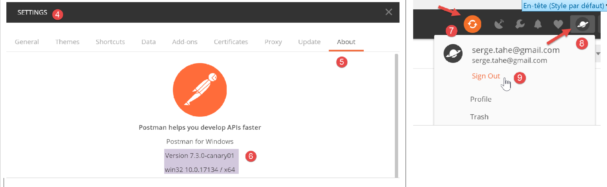
- in [6], the version used in this document;
- if you have created an account, synchronization occurs between your computer and a remote [Postman] server. This is indicated by the spinning wheel [7] that appears whenever you make changes to the [Postman] project. To stop this unnecessary synchronization, log out via [8-9];
23.5.2. The Symfony / Serializer Library
To serialize objects into JSON and XML, we will use the [Symfony / Serializer] library. It offers two advantages here:
- it is consistent in its use for serializing to JSON or XML: this avoids having to learn two libraries with different APIs (Application Programming Interfaces);
- natively, it can serialize objects to JSON or XML, even if their attributes are private. Recall that in JSON, to serialize an object, its class had to implement the [\JsonSerializable] interface. The result obtained was a JSON string of an associative array with the class’s attributes as keys. When deserializing this JSON string, we would retrieve the primitive associative array, which then had to be converted into an object of the class that had been serialized. With [Symfony / Serializer], deserialization immediately produces an object of the serialized class. It’s simpler;
The documentation for the [Symfony / Serializer] library is available at the URL: [https://symfony.com/doc/current/components/serializer.html] (June 2019).
To install this library, open a Laragon terminal (see link section) and type the following command:

- in [1], the command to install the [symfony/serializer] library;
- in [2], another library required for our project: enables object serialization;

23.6. Application Entities

The entities [BaseEntity, Database, ExceptionImpots, TaxAdminData] have been used since version 08 of the web service (see link section).
The [Simulation] class will be used to encapsulate the elements of a tax calculation simulation:
<?php
namespace Application;
class Simulation extends BaseEntity {
// attributes of a tax calculation simulation
protected $marié;
protected $enfants;
protected $salaire;
protected $impôt;
protected $surcôte;
protected $décôte;
protected $réduction;
protected $taux;
// getters
public function getMarié() {
return $this->marié;
}
public function getEnfants() {
return $this->enfants;
}
public function getSalaire() {
return $this->salaire;
}
public function getImpôt() {
return $this->impôt;
}
public function getSurcôte() {
return $this->surcôte;
}
public function getDécôte() {
return $this->décôte;
}
public function getRéduction() {
return $this->réduction;
}
public function getTaux() {
return $this->taux;
}
}
Comments
- Line 5: The [Simulation] class extends the [BaseEntity] class and therefore inherits the following methods:
- [setFromArrayOfAttributes($arrayOfAttributes)]: which allows you to initialize the class’s attributes;
- [__toString]: which returns the object’s JSON string;
- lines 7–14: the simulation’s attributes;
- lines 16–47: the class’s getters;
23.7. Application Utilities

The [Logger] class allows you to log events to a text file. This class is described in the linked section.
The [SendAdminMail] class allows you to send an email to the application administrator. This class is described in the linked section.
23.8. The [business] and [DAO] layers
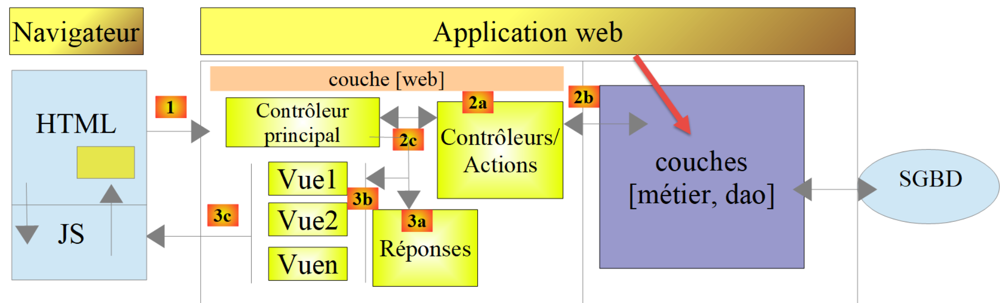

The classes and interfaces of the [business] and [DAO] layers are grouped in the [Model] folder. They have all been defined and used in previous versions:
ExceptionImpots | The class for exceptions thrown by the [DAO] layer. Defined in the linked section. |
InterfaceServerDao | Interface implemented by the server's [dao] layer. Defined in the link section. |
ServerDao | Implementation of the [InterfaceServerDao] interface. Implements the server's [dao] layer. Defined in the link section. |
ServerDaoWithSession | Implementation of the [InterfaceServerDao] interface. Implements the server's [dao] layer. Defined in the "link" section. |
InterfaceServerMetier | Interface implemented by the server's [business] layer. Defined in the link section. |
ServerBusiness | Implementation of the [InterfaceMetier] interface. Implements the server’s [business] layer. Defined in the linked section. |
The application currently being developed makes extensive use of elements already presented and utilized:
- the [business] and [DAO] layers;
- the [Logger] and [SendAdminMail] utilities;
- the [ExceptionImpots, TaxAdminData, Database] entities;
We will focus on the [web] layer of the application:

23.9. The main controller [main.php]
23.9.1. Introduction

- [1-2]: The main controller [main.php] [1] is configured by the [config.json] file [2];
Let’s review the main controller’s position in our MVC architecture:

In [1], the main controller [main.php] is the first element of the MVC architecture to process the client’s request. It has several roles:
- First, it performs basic checks:
- does its configuration file exist and is it valid;
- loading all project dependencies. This amounts to loading all elements of the MVC architecture;
- Has the requested action been specified? If so, is it valid?
- If the requested action is valid, select [2a] the secondary controller that will process it and pass it the information it needs: the HTTP request, the session, and the application configuration;
- Retrieve [2c] the response from the secondary controller. Depending on the application type (JSON, XML, HTML) requested by the client, select [3a] the response (JsonResponse, XmlResponse, HtmlResponse) responsible for sending the response to the client and pass it all the information it needs (the HTTP request, the session, the application configuration, the response from the secondary controller);
- once this response has been sent [3c], release any resources that may have been allocated for processing the request;
23.9.2. [main.php] - 1
The code for the main controller [main.php] is as follows:
<?php
// strict adherence to declared types of function parameters
declare (strict_types=1);
// namespace
namespace Application;
// symfony dependencies
use Symfony\Component\HttpFoundation\Request;
use Symfony\Component\HttpFoundation\Response;
use Symfony\Component\HttpFoundation\Session\Session;
// error handling by PHP
//ini_set("display_errors", "0");
error_reporting(E_ALL && !E_WARNING && !E_NOTICE);
// we retrieve the configuration
$configFilename = "config.json";
$fileContents = \file_get_contents($configFilename);
$erreur = FALSE;
// mistake?
if (!$fileContents) {
// we note the error
$état = 131;
$erreur = TRUE;
$message = "Le fichier de configuration [$configFilename] n'existe pas";
}
if (!$erreur) {
// retrieve the JSON code from the configuration file in an associative array
$config = \json_decode($fileContents, true);
// mistake?
if (!$config) {
// we note the error
$erreur = TRUE;
$état = 132;
$message = "Le fichier de configuration [$configFilename] n'a pu être exploité correctement";
}
}
// mistake?
if ($erreur) {
// preparation of JSON server response
// you can't use the configuration file
// symfony dependencies
require_once "C:/myprograms/laragon-lite/www/vendor/autoload.php";
// response preparation
$response = new Response();
$response->headers->set("content-type", "application/json");
$response->setCharset("utf-8");
// status code
$response->setStatusCode(Response::HTTP_INTERNAL_SERVER_ERROR);
// content
$response->setContent(json_encode(["action" => "", "état" => $état, "réponse" => $message], JSON_UNESCAPED_UNICODE));
// shipping
$response->send();
// end
exit;
}
…
Comments
- lines 10–12: the main controller uses the following Symfony objects:
- [Request]: the HTTP request currently being processed;
- [Session]: the web application session;
- [Response]: the HTTP response to the client;
- line 15: throughout development, this line will remain commented out: PHP errors are then included in the text stream sent to the client. If the client is a browser, this allows the user to see the errors encountered by the server. This aids in debugging;
- line 16: all errors are reported (E_ALL) except warnings (! E_WARNING) and non-fatal notices (! E_NOTICE). For example, if a file cannot be opened, PHP generates an [E_NOTICE] error. If line 15 enables error display, the file-opening error appears in the client’s browser. This is fine if you forgot to test the result of opening the file, but less so if you planned to test it: a [notice] line then clutters the server’s response to the client. During development, line 16 should also be commented out: you don’t want to miss any errors;
- line 19: the configuration file is read;
- lines 22–27: if this read operation fails, the error is logged (line 25), the application is set to state [131], and an error message is prepared;
- line 30: the JSON string from the configuration file is decoded;
- lines 32–37: if the decoding fails, the error is logged (line 34), the application is set to state [132], and an error message is prepared;
- lines 40–57: if an error occurs while reading the configuration file, we cannot proceed. We then prepare a JSON response for the client:
- line 44: since the configuration file was not read, the [autoload] file required by [Symfony] must be imported manually;
- lines 46–47: a JSON response is prepared;
- line 50: the HTTP status code of the response will be 500 INTERNAL_SERVER_ERROR;
- line 52: we set the JSON content of the response. All responses generated by the web application under consideration will have three keys:
- [action]: the action requested by the client;
- [status]: the application’s status after executing this action;
- [response]: the web server’s response;
- line 54: the JSON response is sent to the client;
23.9.3. [Postman] Tests - 1
We will verify the server’s behavior when the configuration file is missing or incorrect:

We will organize the various requests that our [Postman] client will send to the tax server into collections.
- In [1], create a new collection;
- In [2], give it a name;
- In [3], the description is optional;

- In the collections [4], a collection named [impots-server-tests-version12] [5] now appears;
- In [6], you can add a new request to the collection;

- In [7], a name is given to the query;
- in [8], the description is optional;

- in [9-11], the request is added to the collection;
- in [12], select the request type; here, a [GET] request. In [19], the different request types available;
- in [13], enter the server’s URL here;
- in [14], enter the parameters added to the URL here; these will be GET parameters. The advantage of entering them here rather than directly in the URL is that [Postman] will URL-encode them. If you enter them directly in the URL, you will need to URL-encode them yourself;
- in [15], [Authorization] is used to define the user who will log in. We won’t need to use this option;
- in [16], the HTTP headers that will accompany the request. A number of headers are automatically included in the request. You can add new ones here;
- In [17], [Body] refers to the parameters of a [POST] operation. We will need to use this option;
We will perform the following test:
- in [main.php], we specify that the configuration file is [config2.json], which does not exist:

- Line 16 of the code must be uncommented;
- Line 18: the error regarding the configuration file name;
Let’s open [Postman] [13, 20], enter the URL of the tax calculation web server, and execute it [21]:

The response returned by the server (Laragon must, of course, be running) is as follows:

- in [22], the server returned an HTTP code [500 Internal Server Error];
- in [23], [Body] refers to the body of the response, i.e., the document sent by the server behind the HTTP headers [28];
- in [26], we see that [Postman] received a JSON response;
- in [27], the formatted JSON response;
- in [28], the raw JSON response without formatting;
- in [29], [Preview] mode is used when the response is HTML. [Preview] mode then displays the received page;
- In [30], the JSON response from the server. This is indeed the one we were expecting;
In [25], the HTTP headers sent in the server’s response are as follows:

- in [32], the JSON type of the response;
This initial test allowed us to see that we:
- can send any type of request to the tested server;
- can set the GET or POST parameters;
- have the entire response: HTTP headers and the document following these headers [Body];
Now, let’s perform a second test:

- in [1-3], the [config3.json] file is a syntactically incorrect JSON file;
- In [4], [main.php] is configured to use [config3.json];
We add a new request in [Postman]:

- [1-3], right-click on [2] and select the [duplicate] option to duplicate request [2];
- In [4], the new request has a default name, which we change in [5];

- In [6], the renamed request;
- In [9-10], we send the same GET request as before;

- in [11], the server’s JSON response;
Here we have shown how the various actions of the tax calculation web service will be tested.
23.9.4. [main.php] – 2
We resume our examination of the main controller’s code [main.php]:
<?php
// strict adherence to declared types of function parameters
declare (strict_types=1);
// namespace
namespace Application;
// symfony dependencies
use Symfony\Component\HttpFoundation\Request;
use Symfony\Component\HttpFoundation\Response;
use Symfony\Component\HttpFoundation\Session\Session;
// error handling by PHP
//ini_set("display_errors", "0");
error_reporting(E_ALL && !E_WARNING && !E_NOTICE);
// we retrieve the configuration
$configFilename = "config.json";
…
// include the necessary script dependencies
$rootDirectory = $config["rootDirectory"];
foreach ($config["relativeDependencies"] as $dependency) {
require_once "$rootDirectory$dependency";
}
// absolute dependencies (third-party libraries)
foreach ($config["absoluteDependencies"] as $dependency) {
require_once "$dependency";
}
// log file creation
try {
$logger = new Logger($config['logsFilename']);
} catch (ExceptionImpots $ex) {
// log file could not be created - internal server error
$état = 133;
(new JsonResponse())->send(
NULL, NULL, $config,
Response::HTTP_INTERNAL_SERVER_ERROR,
["action" => "non déterminée", "état" => $état, "réponse" => "Le fichier de logs [{$config['logsFilename']}] n'a pu être créé"],
[]);
// completed
exit;
}
Comments
- line 18: we now have a configuration file [config.json] that exists and is syntactically correct. We should also verify that the expected keys are present in this file. We’ll assume this is part of the developer’s normal debugging process. We could have applied the same reasoning to the two previous errors;
- lines 20–28: we include all the dependencies required for the web project. We have already encountered this code several times;
- lines 31–43: we attempt to create the [Logger] object, which will allow us to log events to the file [$config['logsFilename']]. This creation may fail;
- lines 33–43: handling the error when creating the [Logger] object;
- line 35: we set a status number;
- lines 36–40: we send a JSON response;
- line 42: we stop the script;
All responses sent to the client implement the following [InterfaceResponse] interface:

The code for the [InterfaceResponse] interface is as follows:
<?php
namespace Application;
// symfony dependencies
use Symfony\Component\HttpFoundation\Request;
use Symfony\Component\HttpFoundation\Session\Session;
interface InterfaceResponse {
// Request $request : requête en cours de traitement
// Session $session: the web application session
// array $config: application configuration
// int statusCode: HTTP response status code
// array $content: server response
// array $headers: HTTP headers to be added to the response
// Logger $logger: the logger for writing logs
public function send(
Request $request = NULL,
Session $session = NULL,
array $config,
int $statusCode,
array $content,
array $headers,
Logger $logger = NULL): void;
}
- lines 19–27: the [InterfaceResponse] interface has a single method [send] to send the response to the client;
- lines 11–17: the meaning of the various parameters of the [send] method;
- lines 23–25: the parameters [$statusCode, $content, $headers] are part of the standard output of the application’s secondary controllers. However, the response may require additional information. Therefore, we provide it with the first three parameters (lines 20–22), which give it access to all information regarding the request, the session, and the configuration;
- line 26: the response requires the [Logger] because it will log the response sent to the client;
The [JsonResponse] class implements the [InterfaceResponse] interface as follows:
<?php
namespace Application;
// symfony dependencies
use Symfony\Component\Serializer\Encoder\JsonEncode;
use Symfony\Component\Serializer\Encoder\JsonEncoder;
use Symfony\Component\Serializer\Normalizer\ObjectNormalizer;
use Symfony\Component\Serializer\Serializer;
use \Symfony\Component\HttpFoundation\Request;
use \Symfony\Component\HttpFoundation\Session\Session;
class JsonResponse extends ParentResponse implements InterfaceResponse {
// Request $request : requête en cours de traitement
// Session $session: the web application session
// array $config: application configuration
// int statusCode: HTTP response status code
// array $content: server response
// array $headers: HTTP headers to be added to the response
// Logger $logger: the logger for writing logs
public function send(
Request $request = NULL,
Session $session = NULL,
array $config,
int $statusCode,
array $content,
array $headers,
Logger $logger = NULL): void {
// symfony serializer preparation
$serializer = new Serializer(
[
// required for object serialization
new ObjectNormalizer()],
// encoder jSON
// for options, make OU between the different options
[new JsonEncoder(new JsonEncode([JsonEncode::OPTIONS => JSON_UNESCAPED_UNICODE]))]
);
// serialization jSON
$json = $serializer->serialize($content, 'json');
// headers
$headers = array_merge($headers, ["content-type" => "application/json"]);
// sending reply
parent::sendResponse($statusCode, $json, $headers);
// log
if ($logger !== NULL) {
$logger->write("réponse=$json\n");
}
}
}
Comments
- line 13: the class implements the [InterfaceResponse] interface;
- line 13: the class extends the [ParentResponse] class. All [Response] types extend this class. It is this parent class that sends the response to the client (line 46). Because this code was common to all [Response] types, it was factored into a parent class;
- lines 33–40: instantiation of the [Symfony] serializer, which will convert the server response [$content] into a JSON string (line 42);
- lines 34–36: the first parameter of the [Serializer] constructor is an array. In it, we place an instance of the [ObjectNormalizer] class required for object serialization. In this application, this occurs with a list of simulations where each simulation is an instance of the [Simulation] class;
- Line 39: The second parameter of the [Serializer] constructor is also an array: it contains all the encoders used in a serialization (XML, JSON, CSV, etc.);
- line 39: there will be only one encoder here, of type [JsonEncoder]. The parameterless constructor could have been sufficient. Here, we passed a [JsonEncode] parameter to the constructor, solely to pass JSON encoding options;
- line 39: the [JsonEncode] constructor parameter is an array of options. Here we use the [JSON_UNESCAPED_UNICODE] option to request that the UTF-8 characters in the JSON string be rendered natively rather than “escaped”;
- line 42: the body of the HTTP response is serialized into JSON using the previous serializer;
- line 44: We add the HTTP header that tells the client we are sending JSON;
- line 46: the parent class is asked to send the response to the client;
- Lines 48–50: We log the JSON response;
The code for the parent class [ParentResponse] is as follows:
<?php
namespace Application;
// symfony dependencies
use Symfony\Component\HttpFoundation\Response;
class ParentResponse {
// int $statusCode: HTTP response status code
// string $content: the body of the response to be sent
// depending on the case, this is a jSON, XML, HTML string
// array $headers: HTTP headers to be added to the response
public function sendResponse(
int $statusCode,
string $content,
array $headers): void {
// preparing the server's text response
$response = new Response();
$response->setCharset("utf-8");
// status code
$response->setStatusCode($statusCode);
// headers
foreach ($headers as $text => $value) {
$response->headers->set($text, $value);
}
// we send the answer
$response->setContent($content);
$response->send();
}
}
Comments
- lines 10–13: the meaning of the three parameters of the [send] method;
- line 17: note that the response body is of type [string] and therefore ready to be sent (line 30);
- line 22: the response will contain UTF-8 characters;
- line 24: HTTP status code of the response;
- lines 26–28: adding the HTTP headers provided by the calling code;
- lines 30–31: sending the response to the client;
We have detailed the entire lifecycle of a JSON response. We will not revisit this later. You simply need to remember the signature of the [InterfaceResponse] interface:
interface InterfaceResponse {
// Request $request : requête en cours de traitement
// Session $session: the web application session
// array $config: application configuration
// int statusCode: HTTP response status code
// array $content: server response
// array $headers: HTTP headers to be added to the response
// Logger $logger: the logger for writing logs
public function send(
Request $request = NULL,
Session $session = NULL,
array $config,
int $statusCode,
array $content,
array $headers,
Logger $logger = NULL): void;
}
The main controller [main.php] must adhere to this signature every time it requests that a response be sent to the client.
23.9.5. Tests [Postman] – 2
We modify the [config.json] file as follows:

- in [1], we specify that the log file is [Logs], which is a folder [2]. The creation of the [Logs] file should therefore fail;
We create a new [Postman] request [3], named [error-133]:

- [2-4]: We define the same request as in the two previous tests;
- [5-7]: We successfully retrieve the expected JSON response;
23.9.6. [main.php] – 3
Let’s continue our look at the main controller [main.php]:
<?php
// strict adherence to declared types of function parameters
declare (strict_types=1);
// namespace
namespace Application;
// symfony dependencies
use Symfony\Component\HttpFoundation\Request;
use Symfony\Component\HttpFoundation\Response;
use Symfony\Component\HttpFoundation\Session\Session;
// error handling by PHP
…
// log file creation
…
// 1st log
$logger->write("\n---nouvelle requête\n");
// current query
$request = Request::createFromGlobals();
// session
$session = new Session();
$session->start();
// error list
$erreurs = [];
$erreur = FALSE;
// we manage the requested action
if (!$request->query->has("action")) {
$erreurs[] = "paramètre [action] manquant";
$erreur = TRUE;
$état = 101;
$action = "";
} else {
// memorize the action
$action = strtolower($request->query->get("action"));
}
// we log the action
$logger->write("action [$action] demandée\n");
// does the action exist?
if (!$erreur && !array_key_exists($action, $config["actions"])) {
$erreurs[] = "action [$action] invalide";
$erreur = TRUE;
$état = 102;
}
// the session type must be known before performing certain actions
if (!$erreur && !$session->has("type") && $action !== "init-session") {
$erreurs[] = "pas de session en cours. Commencer par action [init-session]";
$erreur = TRUE;
$état = 103;
}
// some actions require authentication
if (!$erreur && !$session->has("user") && $action !== "authentifier-utilisateur" && $action !== "init-session") {
$erreurs[] = "action demandée par utilisateur non authentifié";
$erreur = TRUE;
$état = 104;
}
// mistakes?
if ($erreurs) {
// we prepare the answer without sending it
$statusCode = Response::HTTP_BAD_REQUEST;
$content = ["réponse" => $erreurs];
$headers = [];
} else {
// ---------------------------
// execute the action using its controller
$controller = __NAMESPACE__ . $config["actions"][$action];
$logger->write("contrôleur : $controller\n");
list($statusCode, $état, $content, $headers) = (new $controller())->execute($config, $request, $session);
}
// --------------------- we send the answer
// cas de l'erreur fatale HTTP_INTERNAL_SERVER_ERROR
// send an e-mail to the administrator if you can
if ($statusCode === Response::HTTP_INTERNAL_SERVER_ERROR && $config['adminMail'] != NULL) {
$infosMail = $config['adminMail'];
$infosMail['message'] = json_encode($content, JSON_UNESCAPED_UNICODE);
$sendAdminMail = new SendAdminMail($infosMail, $logger);
$sendAdminMail->send();
}
// the answer depends on the session type
if ($session->has("type")) {
// the session type is in the session
$type = $session->get("type");
} else {
// if no type in session, then the default response is jSON
$type = "json";
}
// we add the keys [action, state] to the controller response
$content = ["action" => $action, "état" => $état] + $content;
// instantiate the [Response] object responsible for sending the response to the client
$response = __NAMESPACE__ . $config["types"][$type]["response"];
(new $response())->send($request, $session, $config, $statusCode, $content, $headers, $logger);
// the reply has been sent - resources are released
$logger->close();
exit;
Comments
- Once the initial checks have been performed and it knows it can proceed, the main controller focuses on the action requested of it: it must meet certain conditions;
- line 21: we log the fact that we have a new request. We couldn’t do this before because we weren’t sure we had a valid log file;
- line 23: we encapsulate all the information from the client’s request into the Symfony [Request] object;
- line 26: we start a new session or retrieve the existing session if one exists;
- line 27: the session is activated;
- line 29: an array of error messages;
- line 30: a boolean that tells us, as the tests run, whether or not an error has occurred;
- Line 32: The [action] parameter must be included in the URL in the form [main.php?action=someAction]. The [action] parameter is then included in the [$request→query] parameters;
- lines 33–36: case where the [action] parameter is absent from the URL. The error is logged and a status code [101] is assigned to it;
- line 39: if the [action] parameter is present in the URL, it is stored;
- line 42: the action type is logged;
- lines 45–49: if the [action] parameter is present, it must be valid. All authorized actions are defined in the associative array [$config["actions"]];
- lines 46–48: if the action is invalid, the error is logged and status [102] is assigned to it;
- lines 52–56: we have a valid action. It must still meet other conditions. The web application provides three response types (JSON, XML, HTML). This type is set by the [init-session] action. This action places the session type in the [type] key;
- line 52: outside the [init-session] action, any other action must occur with a [type] key in the session;
- lines 53–55: if this is not the case, the error is logged and status [103] is assigned to it;
- lines 58–63: outside the [init-session] and [authenticate-user] actions, all other actions must occur after authentication. This is done using the [authenticate-user] action, which, if authentication succeeds, places a [user] key in the session;
- line 59: if the action is neither [init-session] nor [authenticate-user] and the [user] key is not in the session, then an error occurs;
- lines 60–62: the error is logged and assigned the status [104];
- lines 66–71: we check if the array [$errors] is non-empty. If so, then the requested action or its execution context is incorrect;
- lines 68–70: prepare the response to send to the client but do not send it yet;
- line 68: HTTP status code;
- line 69: response body;
- line 70: headers to add to the response; none here;
- line 73: we have a valid action. We will ask its (secondary) controller to process it;
- line 74: we construct the name of the controller class to execute. [__NAMESPACE__] is the namespace we are in, here [Application] (line 7);
- the names of the secondary controller classes are in the [config.json] file:
"actions":
{
"init-session": "\\InitSessionController",
"authentifier-utilisateur": "\\AuthentifierUtilisateurController",
"calculer-impot": "\\CalculerImpotController",
"lister-simulations": "\\ListerSimulationsController",
"supprimer-simulation": "\\SupprimerSimulationController",
"fin-session": "\\FinSessionController",
"afficher-calcul-impot": "\\AfficherCalculImpotController"
},
Each action corresponds to a secondary controller. If the action is [authenticate-user], the variable [$controller] on line 74 will therefore have the value [Application/AuthentifierUtilisateurController];
- line 75: we log the name of the secondary controller for verification during development;
- line 76: the secondary controller is executed. We will return to secondary controllers a little later;
- line 76: all secondary controllers return the same type of result, which is an array:
- the first element of the array [$statusCode] is the HTTP status code of the response to be sent;
- the second element [$state] is the application’s state after the controller has executed;
- the third element [$content] is an associative array with a single key [response], which is the body of the response to be sent to the client;
- the fourth element [$headers] is an array of HTTP headers to be added to the response sent to the client;
- line 79: we arrive here:
- either because an error occurred (lines 68–70);
- or after executing a controller (lines 72–76);
- in both cases, the elements [$statusCode, $status, $content, $headers] needed to construct the response to the client are known;
- lines 82–87: handle the specific case of status code [500 Internal Server Error]. If a controller has set this status code, it means the application cannot function. This is the case, for example, with tax calculations if the DBMS being used has not been started or is no longer responding. An email is then sent to the application administrator to notify them. We will not comment specifically on this code. The use of the [SendAdminMail] class has already been presented (see linked section);
- lines 89–95: We determine the type [jSON, XML, HTML] of the web application. If the [init-session] action was executed successfully, this type is in the session associated with the [type] key (line 91). If this is not the case, then we arbitrarily set a type for the response, the JSON type (line 94);
- line 97: [$content] is an array with a single key [response] and a single value, the body of the response to be sent to the client. The keys [action] and [status] are added to it. The [action] key will make it easier to track the logs in the [logs.txt] file. The [status] key will serve two purposes:
- it will allow JSON and XML clients to know the state into which the executed action has put the web application;
- in the case of an HTML response, it will allow us to choose the HTML view to send to the client browser;
- line 99: we select the [Response] class type to execute in order to send the response to the client;
We have already introduced the [JsonResponse] class in the previous section. It implements the [InterfaceResponse] interface and extends the [ParentResponse] class. This is also the case for the other two classes, [XmlResponse] and [HtmlResponse].
The responses are grouped in the [Responses] folder:

All of these classes implement the [InterfaceResponse] interface, which is also presented in the linked section:
<?php
namespace Application;
// symfony dependencies
use Symfony\Component\HttpFoundation\Request;
use Symfony\Component\HttpFoundation\Session\Session;
interface InterfaceResponse {
// Request $request : requête en cours de traitement
// Session $session: the web application session
// array $config: application configuration
// int statusCode: HTTP response status code
// array $content: server response
// array $headers: HTTP headers to be added to the response
// Logger $logger: the logger for writing logs
public function send(
Request $request = NULL,
Session $session = NULL,
array $config,
int $statusCode,
array $content,
array $headers,
Logger $logger = NULL): void;
}
This interface has a single method, [send], responsible for sending the response to the client. This method has the 7 parameters described in lines 11–17. All classes and interfaces in the [Responses] folder are in the [Application] namespace (line 3).
Let’s return to the code in [main.php]:
…
// on ajoute les clés [action, état] à la réponse du contrôleur
$content = ["action" => $action, "état" => $état] + $content;
// on instancie l'objet [Response] chargée d'envoyer la réponse au client
$response = __NAMESPACE__ . $config["types"][$type];
(new $response())->send($request, $session, $config, $statusCode, $content, $headers, $logger);
// la réponse a été envoyée - on libère les ressources
$logger->close();
exit;
- Line 5: We instantiate the [Response] class that matches the application type. These classes are defined in the [config.json] file as follows:
"types": {
"json": "\\JsonResponse",
"html": "\\HtmlResponse",
"xml": "\\XmlResponse"
},
- line 5: the class name is prefixed with its namespace;
- line 6: the [Response] class is instantiated and its [send] method is called with the 7 parameters it expects. These parameters are those of the [InterfaceResponse] interface that all response classes implement. This sends the response to the client;
- line 9: the log file is closed;
- line 10: the main controller has finished its work;
23.9.7. [Postman] Tests – 3
We will test various error cases for the [action] parameter of the URL.

- in [1]:
- [error-101]: case where the [action] parameter is missing from the URL;
- [error-102]: case where the [action] parameter is present in the URL but not recognized;
- [error-103]: case where the [action] parameter is present in the URL and recognized, but the expected response type [json, xml, html] has not been defined;
Each request is executed. We present the results directly:
Above:
- in [2-4], a request without the [action] parameter in the URL [4];
- in [5-7], the JSON result;

Above:
- in [5-9], a request with an invalid [action] parameter;
- in [10-13], the JSON response;

Above:
- in [14-19], an action recognized but the type (json, xml, html) has not yet been specified;
- in [20-23], the server’s JSON response;
23.10. Secondary controllers
Each action is executed by one of the controllers in the [Controllers] folder:

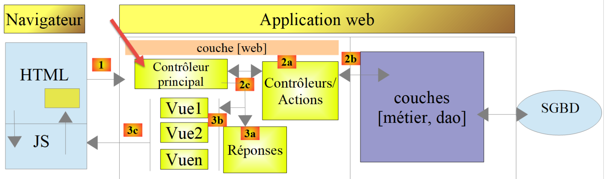
In the general architecture of the application above, the secondary controllers are in [2a].
Each controller implements the following [InterfaceController] interface:
<?php
namespace Application;
// symfony dependencies
use Symfony\Component\HttpFoundation\Request;
use Symfony\Component\HttpFoundation\Session\Session;
interface InterfaceController {
// $config is the application configuration
// traitement d'une requête Request
// session and can modify it
// $infos is additional information specific to each controller
// renders an array [$statusCode, $état, $content, $headers]
public function execute(
array $config,
Request $request,
Session $session,
array $infos=NULL): array;
}
Comments
- All secondary controllers are executed via the [execute] method on line 17. We pass the known information from the main controller to this method:
- line 18: [array $config], which encapsulates the application configuration;
- line 19: [Request $request], which is the HTTP request currently being processed;
- line 20: [Session $session], which is the current session of the web application;
- line 21: [array $infos=NULL], which is an additional array of information for the controller in case the first three parameters of the method are insufficient. In this application, this parameter has never been used. It is included as a precaution;
- line 21: the [execute] method returns the array [$statusCode, $status, $content, $headers]
- [int $statusCode]: the HTTP response status code;
- [int $state]: the state of the application at the end of execution;
- [array $content]: an associative array [response=>result] where [result] is of any type: this is the result produced by the controller and will be sent to the client once serialized as a string;
- [array $headers]: the list of HTTP headers to be included in the server’s HTTP response;
Each secondary controller is called by the following code in the main controller:
// on exécute l'action à l'aide de son contrôleur
$controller = __NAMESPACE__ . $config["actions"][$action];
list($statusCode, $état, $content, $headers) = (new $controller())->execute($config, $request, $session);
In line 3, we see that the fourth parameter [array $infos=NULL] of the [execute] method is not used.
23.11. Actions
We will now review the various possible actions of the web service:
Action | Role | Execution context |
init-session | Used to set the type (json, xml, html) of the desired responses | GET request main.php?action=init-session&type=x can be sent at any time |
authenticate-user | Authorizes or denies a user's login | POST request main.php?action=authenticate-user The request must have two posted parameters [user, password] Can only be issued if the session type (json, xml, html) is known |
calculate-tax | Performs a tax calculation simulation | POST request to main.php?action=calculate-tax The request must have three posted parameters [married, children, salary] Can only be issued if the session type (json, xml, html) is known and the user is authenticated |
list-simulations | Request to view the list of simulations performed since the start of the session | GET request main.php?action=list-simulations The request does not accept any other parameters Can only be issued if the session type (json, xml, html) is known and the user is authenticated |
delete-simulation | Deletes a simulation from the list of simulations | GET request main.php?action=list-simulations&number=x The request does not accept any other parameters Can only be issued if the session type (json, xml, html) is known and the user is authenticated |
end-session | Ends the simulation session. | Technically, the old web session is deleted and a new session is created Can only be issued if the session type (json, xml, html) is known and the user is authenticated |
All secondary controllers proceed in the same way:
- they check their parameters. These are found in the [Request→query] object for parameters present in the URL and in the [Request→request] object for those that are posted (POST request);
- A controller is similar to a function or method that checks the validity of its parameters. For the controller, however, it is a bit more complicated:
- the expected parameters may be missing;
- the expected parameters are all strings, whereas a function can specify the type of its parameters. If the expected parameter is a number, then you must verify that the parameter string is indeed that of a number;
- once verified that the expected parameters are present and syntactically correct, you must verify that they are valid in the current execution context. This context is present in the session. The authentication example is an example of an execution context. Certain actions should only be processed once the client has been authenticated. Generally, a key in the session indicates whether this authentication has taken place or not;
- once the previous checks have been completed, the secondary controller can proceed. This parameter verification process is very important. We cannot accept a client sending us arbitrary data at any point during the application’s lifecycle. We must maintain full control over the application’s lifecycle;
- Once its work is done, the secondary controller returns the array [$statusCode, $state, $content, $headers] expected by the main controller that called it;
We will now review the various controllers—or, in other words, the various actions that drive the web application’s lifecycle.
23.11.1. The [init-session] action
The [init-session] action is handled by the following [InitSessionController]:
<?php
namespace Application;
// symfony dependencies
use Symfony\Component\HttpFoundation\Request;
use Symfony\Component\HttpFoundation\Response;
use Symfony\Component\HttpFoundation\Session\Session;
class InitSessionController implements InterfaceController {
// $config is the application configuration
// traitement d'une requête Request
// session and can modify it
// $infos is additional information specific to each controller
// renders an array [$statusCode, $état, $content, $headers]
public function execute(
array $config,
Request $request,
Session $session,
array $infos = NULL): array {
// you must have a GET and a single parameter other than [action]
$method = strtolower($request->getMethod());
$erreur = $method !== "get" || $request->query->count() != 2;
if ($erreur) {
$état = 701;
$message = "méthode GET exigée avec paramètres [action, type] dans l'URL";
return [Response::HTTP_BAD_REQUEST, $état, ["réponse" => $message], []];
}
// retrieve the GET parameters
$erreur = FALSE;
// type
if (!$request->query->has("type")) {
$erreur = TRUE;
$état = 702;
$message = "paramètre [type] manquant";
} else {
$type = strtolower($request->query->get("type"));
}
// type verification
if (!$erreur && !array_key_exists($type, $config["types"])) {
$erreur = TRUE;
$état = 703;
$message = "paramètre type [$type] invalide";
}
// mistake?
if ($erreur) {
return [Response::HTTP_BAD_REQUEST, $état, ["réponse" => $message], []];
}
// put the session type in the session
$session->set("type", $type);
// message of success
$message = "session démarrée avec type [$type]";
$état = 700;
return [Response::HTTP_OK, $état, ["réponse" => $message], []];
}
}
Comments
- We expect a [GET main.php?action=init-session&type=xxx] request
- lines 25-26: we check that the request is a GET request with two parameters in the URL;
- lines 27–31: if this is not the case, log the error and send a response [$statusCode, $status, $content, $headers] to the main controller;
- lines 35-39: we check that the [type] parameter is present in the URL. If not, we log the error;
- line 40: log the session type;
- lines 43–47: we check that the session type is one of the terms (json, xml, html). If not, we log the error;
- lines 49–51: if an error occurred, a result [$statusCode, $status, $content, $headers] is sent to the main controller;
- line 53: the session type is stored in the web application session;
- lines 55–57: the controller has finished its work. A success response [$statusCode, $status, $content, $headers] is sent to the main controller;
Let’s review what the main controller does with the responses from the secondary controllers:
// erreurs ?
if ($erreurs) {
// on prépare la réponse sans l'envoyer
$statusCode = Response::HTTP_BAD_REQUEST;
$content = ["réponse" => $erreurs];
$headers = [];
} else {
// ---------------------------
// on exécute l'action à l'aide de son contrôleur
$controller = __NAMESPACE__ . $config["actions"][$action];
$logger->write("contrôleur : $controller\n");
list($statusCode, $état, $content, $headers) = (new $controller())->execute($config, $request, $session);
}
// --------------------- on envoie la réponse
// cas de l'erreur fatale HTTP_INTERNAL_SERVER_ERROR
// on envoie un mail à l'administrateur si on peut
if ($statusCode === Response::HTTP_INTERNAL_SERVER_ERROR && $config['adminMail'] != NULL) {
$infosMail = $config['adminMail'];
$infosMail['message'] = json_encode($content, JSON_UNESCAPED_UNICODE);
$sendAdminMail = new SendAdminMail($infosMail, $logger);
$sendAdminMail->send();
}
// la réponse dépend du type de la session
if ($session->has("type")) {
// le type de session est dans la session
$type = $session->get("type");
} else {
// si pas de type dans session, alors par défaut ce sera une réponse en jSON
$type = "json";
}
// on ajoute les clés [action, état] à la réponse du contrôleur
$content = ["action" => $action, "état" => $état] + $content;
// on instancie l'objet [Response] chargée d'envoyer la réponse au client
$response = __NAMESPACE__ . $config["types"][$type]["response"];
(new $response())->send($request, $session, $config, $statusCode, $content, $headers, $logger);
// la réponse a été envoyée - on libère les ressources
$logger->close();
exit;
- line 12: the main controller retrieves the result from the secondary controller;
- lines 35-36: after some checks, it sends the response by instantiating one of the classes [JsonResponse, XmlResponse, HtmlResponse] depending on the type (json, xml, html) of the current session;
Next, we will perform [Postman] tests as part of a simulation session using the [json] type. The functionality of the [JsonResponse] class was presented in the linked section.
23.11.2. [Postman] Tests

Above:
- in [2], three new tests;
- in [3-7], the [init-session] action with the [type] parameter missing;
- in [8-11], the server’s JSON response;

Above:
- in [1-7], the [init-session] action with an incorrect [type] parameter;
- in [8-11], the server's JSON response;

Above:
- in [1-8], the [init-session] action with the JSON type;
- in [9-12], the server’s JSON response;
23.11.3. The [authenticate-user] action
The [authenticate-user] action is executed by the following [AuthentifierUtilisateurController] controller:
<?php
namespace Application;
// symfony dependencies
use \Symfony\Component\HttpFoundation\Response;
use \Symfony\Component\HttpFoundation\Request;
use \Symfony\Component\HttpFoundation\Session\Session;
class AuthentifierUtilisateurController implements InterfaceController {
// $config is the application configuration
// traitement d'une requête Request
// session and can modify it
// $infos is additional information specific to each controller
// renders an array [$statusCode, $état, $content, $headers]
public function execute(
array $config,
Request $request,
Session $session,
array $infos = NULL): array {
// you must have a POST and a single GET parameter
$method = strtolower($request->getMethod());
$erreur = $method !== "post" || $request->query->count() != 1;
if ($erreur) {
$état = 201;
$message = "méthode POST requise, paramètre [action] dans l'URL, paramètres postés [user,password]";
// return the result to the main controller
return [Response::HTTP_BAD_REQUEST, $état, ["réponse" => $message], []];
}
// retrieve POST parameters
$erreurs = [];
// user
$état = 210;
if (!$request->request->has("user")) {
$état += 2;
$erreurs[] = "paramètre [user] manquant";
} else {
$user = $request->request->get("user");
}
// password
if (!$request->request->has("password")) {
$état += 4;
$erreurs[] = "paramètre [password] manquant";
} else {
$password = trim($request->request->get("password"));
}
// mistake?
if ($erreurs) {
// return the result to the main controller
return [Response::HTTP_BAD_REQUEST, $état, ["réponse" => $erreurs], []];
}
// verification of user credentials
// does the user exist?
$users = $config["users"];
$i = 0;
$trouvé = FALSE;
while (!$trouvé && $i < count($users)) {
$trouvé = ($user === $users[$i]["login"] && $users[$i]["passwd"] === $password);
$i++;
}
// found?
if (!$trouvé) {
// error message
$message = "Echec de l'authentification [$user, $password]";
$état = 221;
// return the result to the main controller
return [Response::HTTP_UNAUTHORIZED, $état, ["réponse" => $message], []];
} else {
// we note in the session that we have authenticated the user
$session->set("user", TRUE);
// message of success
$message = "Authentification réussie [$user, $password]";
$état = 200;
// return the result to the main controller
return [Response::HTTP_OK, $état, ["réponse" => $message], []];
}
}
}
Comments
- We expect a [POST main.php?action=authentifier-utilisateur] request with two parameters [user, password];
- lines 24–25: we verify that we have a POST request with a single parameter in the URL;
- lines 26–31: if there is an error, we log it and return a result [$statusCode, $status, $content, $headers] to the main controller;
- lines 36–39: we check for the presence of the [user] parameter in the posted values. If it is not present, we log the error;
- lines 43–45: check for the presence of the [password] parameter in the posted values. If it is not present, log the error;
- lines 50–53: if any of the posted values are missing, a result [$statusCode, $status, $content, $headers] is returned to the main controller;
- lines 56–62: we check that the retrieved [$user,$password] pair is present in the [$config[‘users’]] array in the configuration file;
- lines 64–69: if this is not the case, the error is logged. The HTTP status code is set to [Response::HTTP_UNAUTHORIZED] and the result [$statusCode, $status, $content, $headers] is returned to the main controller;
- line 72: authentication was successful. This is noted in the session by setting the [user] key. The presence of this key indicates successful authentication;
- Lines 73–77: A success result [$statusCode, $status, $content, $headers] is returned to the main controller;
23.11.4. [Postman] Tests
We perform [Postman] tests on the [AuthentifierUtilisateurController] controller in JSON mode;

Above:
- in [1-6], the [authenticate-user] action with a GET [2], whereas a POST is required;
- in [7-10], the server’s JSON response;
Let’s replace the GET with a POST [2] without including any parameters in the response body [7]:

Above:
- in [1-7], the POST without parameters posted in [7];
- in [8-11], the server's JSON response;
Now let’s add a parameter [password] to the request body [4]:

Above:
- in [1-6], a POST request [2] with a [password] parameter posted [4-6]. Posted parameters must be added to the request body [4]. There are several ways to post values to the server. We choose the [x-www-form-urlencoded] method [5];
- in [8-10], the JSON response from the server;
Now let’s define the [user] parameter without the [password] parameter:

Above:
- in [1-7], a POST request without the [password] parameter [4-7];
- in [8-11], the server's JSON response;
Now let’s set the two parameters [user, password] but with values that cause the authentication to fail:

Above:
- in [1-9], a POST request with incorrect [user, password] parameters;
- in [10-13], the server’s JSON response. Note the status code [401 Unauthorized] [10] in the response;
Now a POST request with valid credentials:

Above:
- in [1-9], the POST request [2] with valid credentials [6-9];
- in [10-13], the server’s JSON response. Note the HTTP status code [200 OK] in [10];
23.11.5. The [calculate-tax] action
The [calculer-impot] action is handled by the following [CalculerImpotController] controller:
<?php
namespace Application;
// symfony dependencies
use \Symfony\Component\HttpFoundation\Response;
use \Symfony\Component\HttpFoundation\Request;
use \Symfony\Component\HttpFoundation\Session\Session;
// layer alias [dao]
use \Application\ServerDaoWithSession as ServerDaoWithRedis;
class CalculerImpotController implements InterfaceController {
// $config is the application configuration
// traitement d'une requête Request
// session and can modify it
// $infos is additional information specific to each controller
// renders an array [$statusCode, $état, $content, $headers]
public function execute(
array $config,
Request $request,
Session $session,
array $infos = NULL): array {
// you must have one GET parameter and three POST parameters
$method = strtolower($request->getMethod());
$erreur = $method !== "post" || $request->query->count() != 1;
if ($erreur) {
// we note the error
$message = "il faut utiliser la méthode [post] avec [action] dans l'URL et les paramètres postés [marié, enfants, salaire]";
$état = 301;
// return result to main controller
return [Response::HTTP_BAD_REQUEST, $état, ["réponse" => $message], []];
}
// retrieve POST parameters
$erreurs = [];
$état = 310;
// marital status
if (!$request->request->has("marié")) {
$état += 2;
$erreurs[] = "paramètre [marié] manquant";
} else {
$marié = trim(strtolower($request->request->get("marié")));
$erreur = $marié !== "oui" && $marié !== "non";
if ($erreur) {
$état += 4;
$erreurs[] = "valeur [$marié] invalide pour le paramètre [marié]";
}
}
// the number of children
if (!$request->request->has("enfants")) {
$état += 8;
$erreurs[] = "paramètre [enfants] manquant";
} else {
$enfants = trim($request->request->get("enfants"));
$erreur = !preg_match("/^\d+$/", $enfants);
if ($erreur) {
$état += 9;
$erreurs[] = "valeur [$enfants] invalide pour le paramètre [enfants]";
}
}
// we recover the annual salary
if (!$request->request->has("salaire")) {
$erreurs[] = "paramètre [salaire] manquant";
$état += 16;
} else {
$salaire = trim($request->request->get("salaire"));
$erreur = !preg_match("/^\d+$/", $salaire);
if ($erreur) {
$état += 17;
$erreurs[] = "valeur [$salaire] invalide pour le paramètre [salaire]";
}
}
// mistake?
if ($erreurs) {
// return result to main controller
return [Response::HTTP_BAD_REQUEST, $état, ["réponse" => $erreurs], []];
}
// we have everything you need to work
// Redis
\Predis\Autoloader::register();
try {
// customer [predis]
$redis = new \Predis\Client();
// connect to the server to see if it's there
$redis->connect();
} catch (\Predis\Connection\ConnectionException $ex) {
// it didn't go well
// return result with error to main controller
$état = 350;
return [Response::HTTP_INTERNAL_SERVER_ERROR, $état,
["réponse" => "[redis], " . utf8_encode($ex->getMessage())], []];
}
// we have valid parameters
// creation of the [dao] layer
if (!$redis->get("taxAdminData")) {
try {
// retrieve tax data from the database
$dao = new ServerDaoWithRedis($config["databaseFilename"], NULL);
// put the recovered data into redis
$redis->set("taxAdminData", $dao->getTaxAdminData());
} catch (\RuntimeException $ex) {
// it didn't go well
// return result with error to main controller
$état = 340;
return [Response::HTTP_INTERNAL_SERVER_ERROR, $état,
["réponse" => utf8_encode($ex->getMessage())], []];
}
} else {
// tax data are taken from the [application] scope memory
$arrayOfAttributes = \json_decode($redis->get("taxAdminData"), true);
$taxAdminData = (new TaxAdminData())->setFromArrayOfAttributes($arrayOfAttributes);
// istanciation of the [dao] layer
$dao = new ServerDaoWithRedis(NULL, $taxAdminData);
}
// creation of the [business] layer
$métier = new ServerMetier($dao);
// we have everything we need to work - tax calculation
$résultat = $métier->calculerImpot($marié, (int) $enfants, (int) $salaire);
// we add the simulation just run to the session
$simulation = new Simulation();
$résultat = ["marié" => $marié, "enfants" => $enfants, "salaire" => $salaire] + $résultat;
$simulation->setFromArrayOfAttributes($résultat);
// is there a list of in-session simulations?
if (!$session->has("simulations")) {
$simulations = [];
} else {
$simulations = $session->get("simulations");
}
// add simulation to simulation list
$simulations[] = $simulation;
// simulations are put back into session
$session->set("simulations", $simulations);
// return result to main controller
$état = 300;
return [Response::HTTP_OK, $état, ["réponse" => $résultat], []];
}
}
Comments
- The expected request is [POST main.php?action=calculate-tax] with three posted parameters [married, children, salary]:
- [married] must be either [yes] or [no];
- [children, salary] must be positive integers or zero;
- lines 26–27: we verify that we have a POST request with a single parameter in the URL;
- lines 28–34: if this is not the case, an error result is sent to the main controller;
- line 36: we will accumulate the error messages in the array [$errors];
- lines 39–41: we check for the presence of the [married] parameter. If it is not present, the error is logged;
- lines 43–49: we check that [married] has a value in [yes, no]. If this is not the case, the error is logged;
- lines 51–54: Check for the presence of the [children] parameter. If it is not present, an error is logged;
- lines 55–61: Check that the value of the [children] parameter is a positive number or zero. If this is not the case, an error is logged;
- lines 63–66: we check for the presence of the [salary] parameter. If it is not present, an error is logged;
- lines 67–72: We check that the value of the [salary] parameter is a positive number or zero. If this is not the case, an error is logged;
- lines 75–78: If the [$errors] array is not empty, it means errors occurred. We include the error array in the response and return the result to the main controller;
- line 80: we have valid parameters. We can calculate the tax. To do this, we need to build the [dao] and [business] layers that know how to perform this calculation;
- lines 82–94: we create a [Redis] client;
- lines 88–94: if we were unable to connect to the [Redis] server, we send a [500 Internal Server Error] code to the client;
- line 98: we check if the [Redis] server has the key [taxAdminData]. This key represents the tax administration data. If the key is not present, then the tax data must be retrieved from the database;
- line 101: construction of the [dao] layer when tax data must be retrieved from the database. The [ServerDaoWithRedis] class was described in the linked section;
- line 103: the data retrieved from the database is stored in [Redis] with the key [taxAdminData];
- lines 104–110: if the database query failed, the error returned by the [dao] layer is logged and included in the result sent back to the main controller;
- line 109: the error message returned by the [PDO] layer is encoded in [iso-8859-1]. It is encoded in [utf-8];
- lines 111–117: if the [taxAdminData] key exists in the [Redis] store, then the tax data is passed directly to the [DAO] layer constructor;
- line 119: the [business] layer is created. The [ServerMetier] class was described in the link section;
- lines 124–126: with the calculated tax amount, a [Simulation] object is created. The [Simulation] class encapsulates the data of a simulation and was described in the linked section;
- lines 128–132: the simulation that has just been constructed must be added to the list of simulations already calculated. This list is in session unless no simulation has been performed yet;
- lines 133–136: the simulation is added to the list of simulations, and the list is returned to the session;
- lines 137–139: the result is returned to the main controller;
23.11.6. [Postman] Tests
We perform [Postman] tests on the [CalculerImpotController] controller in JSON mode;

Above:
- in [1-7], we make a [GET] request instead of a [POST] request;
- In [8-11], the server’s JSON response;
Now, let’s use a [POST] method, with or without posted parameters, as well as with invalid posted parameters:

Above:
- we make a [POST] request [2] with invalid posted parameters [6-11] [married, children, salary]. You can omit one of these parameters by unchecking its box in [16]. This will allow you to test different scenarios. In the screenshot above, all three parameters are present and all are invalid;
- in [12-15], the server’s JSON response;
Now let’s uncheck two of the three posted parameters:

Above,
- in [5-8], only the [salary] parameter is posted, and furthermore, it is invalid;
- in [9-11], the JSON result from the server;
Now let’s perform a tax calculation with valid parameters:

Above:
- in [11-18], a request with valid parameters [6-8];
- in [12-14], the server's JSON response;
23.11.7. The [lister-simulations] action
The [lister-simulations] action is handled by the following secondary controller [ListerSimulationsController]:
<?php
namespace Application;
// symfony dependencies
use \Symfony\Component\HttpFoundation\Response;
use \Symfony\Component\HttpFoundation\Request;
use \Symfony\Component\HttpFoundation\Session\Session;
class ListerSimulationsController {
// $config is the application configuration
// traitement d'une requête Request
// useful session and can modify it
// $infos is additional information specific to each controller
// renders an array [$statusCode, $état, $content, $headers]
public function execute(
array $config,
Request $request,
Session $session,
array $infos = NULL): array {
// you must have a single parameter GET
$method = strtolower($request->getMethod());
$erreur = $method !== "get" || $request->query->count() != 1;
if ($erreur) {
$état = 501;
$message = "GET requis, avec l'unique paramètre [action] dans l'URL";
// return an error result to the main controller
return [Response::HTTP_BAD_REQUEST, $état, ["réponse" => $message], []];
}
// retrieve the list of simulations in the session
if (!$session->has("simulations")) {
$simulations = [];
} else {
$simulations = $session->get("simulations");
}
// a successful result is returned to the main controller
$état = 500;
return [Response::HTTP_OK, $état, ["réponse" => $simulations], []];
}
}
Comments
- request [GET main.php?action=list-simulations];
- lines 24-25: we check that we have a GET request with a single parameter;
- lines 26–31: if this is not the case, an error result is returned to the main controller;
- lines 33-37: retrieve the list of simulations from the session if it is present (line 36), otherwise the list is empty (line 34);
- lines 39-40: return the list of simulations to the main controller;
23.11.8. Tests [Postman]
We will create two tests, one for an error and one for a success.

Above:
- in [1-8], we make a [GET] request with an extra parameter [param1] in the URL [3, 7-8];
- In [9-12], the server’s JSON response;
Now let’s make a valid request:
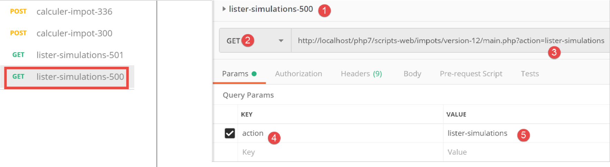
Above:
- in [1-5], a valid request;
The result of the request is as follows:
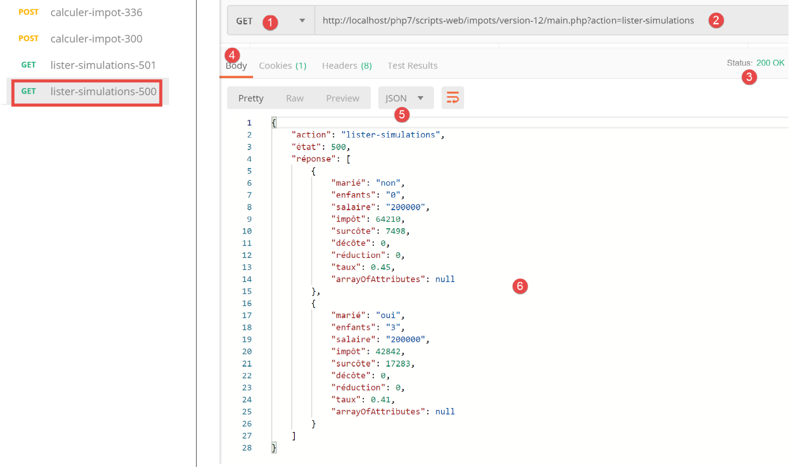
- in [3-6], the server's JSON response. Prior to this test, the [Postman] [calculate-tax-300] test had been run several times to create simulations in the server's web session;
23.11.9. The [delete-simulation] action
The [delete-simulation] action is handled by the following secondary controller [DeleteSessionController]:
<?php
namespace Application;
// symfony dependencies
use \Symfony\Component\HttpFoundation\Response;
use \Symfony\Component\HttpFoundation\Request;
use \Symfony\Component\HttpFoundation\Session\Session;
class SupprimerSimulationController {
/// $config is the application configuration
// traitement d'une requête Request
// useful session and can modify it
// $infos is additional information specific to each controller
// renders an array [$statusCode, $état, $content, $headers]
public function execute(
array $config,
Request $request,
Session $session,
array $infos = NULL): array {
// you must have two GET parameters
$method = strtolower($request->getMethod());
$erreur = $method !== "get" || $request->query->count() != 2;
$état = 600;
if ($erreur) {
$état += 2;
$message = "GET requis, avec les paramètres [action, numéro]";
}
// parameter [number] must exist
if (!$erreur) {
$état += 4;
$erreur = !$request->query->has("numéro");
if ($erreur) {
$message = "paramètre [numéro] manquant";
}
}
// parameter [number] must be valid
if (!$erreur) {
$état += 8;
$numéro = $request->query->get("numéro");
$erreur = !preg_match("/^\d+$/", $numéro);
if ($erreur) {
$message = "paramètre [$numéro] invalide";
}
}
// parameter [number] must be in the range [0,n-1]
// if n is the number of simulations
if (!$erreur) {
$numéro = (int) $numéro;
$erreur = !$session->has("simulations");
if (!$erreur) {
$simulations = $session->get("simulations");
$erreur = $numéro < 0 || $numéro >= count($simulations);
}
if ($erreur) {
$état += 16;
$message = "la simulation n° [$numéro] n'existe pas";
}
}
// mistake?
if ($erreur) {
// return the result to the main controller
return [Response::HTTP_BAD_REQUEST, $état, ["réponse" => $message], []];
}
// delete the $numéro simulation
unset($simulations[$numéro]);
$simulations = array_values($simulations);
// put the simulations back in the session
$session->set("simulations", $simulations);
// we return the list of simulations to the customer
$état = 600;
return [Response::HTTP_OK, $état, ["réponse" => $simulations], []];
}
}
Comments
- request [GET main.php?action=delete-simulation&number=x];
- lines 24–30: we check that we have a GET request with two parameters;
- lines 32–38: we check that the [number] parameter exists in the URL parameters;
- lines 40-47: we verify that the value of the [number] parameter is syntactically correct;
- lines 50–61: verify that simulation #[number] actually exists. There are two error cases:
- the list of simulations cannot be found in the session (line 52);
- the simulation number [number] to be deleted does not exist in the list of simulations;
- lines 63–66: in case of an error, an error result is returned to the main controller;
- line 68: simulation #[number] is deleted;
- line 69: the [unset] operation does not change the indices [0, n-1] of the list. To update them, we retrieve the values from the [$simulations] array to remove the missing simulation;
- line 71: the new array of simulations is put back into the session;
- lines 73-74: the new list of simulations is returned to the main controller;
23.11.10. [Postman] Tests
We will perform success and failure tests:

Above:
- in [1-6], a GET request without the [number] parameter;
- in [7-10], the server’s JSON response;
Now a request with a syntactically incorrect number:

Above:
- in [1-5], a GET request with an invalid [number] parameter [3, 5];
- in [6-9], the server’s JSON response;
Now a request with a simulation number that does not exist:

Above:
- in [1-5], a request with a simulation number equal to 100 that does not exist in the list of simulations;
- in [6-9], the server’s JSON response;
Now, we’re going to remove simulation #0 from the list, i.e., the first simulation. First, let’s request this list again using the [lister-simulations-500] request:

- in [1], there are currently 2 simulations;
We delete the first simulation (number 0):

Above:
- in [1-5], we delete simulation #0 [5];
- in [6-9], the server’s JSON response. We can see that simulation #0 has been removed;
Let's repeat this step:

Above:
- In [1], there are no more simulations left in the server’s web session;
23.11.11. The [end-session] action
The [end-session] action is handled by the following secondary controller [FinSessionController]:
<?php
namespace Application;
// symfony dependencies
use \Symfony\Component\HttpFoundation\Response;
use \Symfony\Component\HttpFoundation\Request;
use \Symfony\Component\HttpFoundation\Session\Session;
class FinSessionController implements InterfaceController {
// $config is the application configuration
// traitement d'une requête Request
// session and can modify it
// $infos is additional information specific to each controller
// renders an array [$statusCode, $état, $content, $headers]
public function execute(
array $config,
Request $request,
Session $session,
array $infos = NULL): array {
// you must have a single parameter GET
$method = strtolower($request->getMethod());
$erreur = $method !== "get" || $request->query->count() != 1;
// mistake?
if ($erreur) {
$état = 401;
// result to main controller
$message = "GET requis avec le seul paramètre [action] dans l'URL";
return [Response::HTTP_BAD_REQUEST, $état, ["réponse" => $message], []];
}
// memorize the session type
$type = $session->get("type");
// the current session is invalidated
$session->invalidate();
// put the type back in the new session
$session->set("type", $type);
// reply sent
$état = 400;
// result to main controller
$content = ["réponse" => "session supprimée"];
return [Response::HTTP_OK, $état, $content, []];
}
}
Comments
- request [GET main.php?action=end-session];
- lines 25–33: we verify that the action is a GET with the single parameter [end-action];
- line 38: invalidate the current session. This deletes the data stored in it and a new session is started;
- line 36: before ending the session, we store its type [json, xml, html];
- line 40: the type of the previous session is set in the new session. Finally, we proceed with a new session containing the single key [type];
- lines 44–45: the result is returned to the main controller;
23.11.12. Tests [Postman]
We will perform an error test and a success test:

Above:
- in [1-5], we request the end of the session [5] with a POST [2] instead of the expected GET;
- In [6-9], the server’s JSON response;
Now, an example of a successful test. First, let’s look at the session cookie exchanged between the client [Postman] and the server during the last test performed:

Above:
- in [3], the session cookie sent by the client [Postman] to the server;
Now let’s look at the HTTP headers sent by the server in its response:
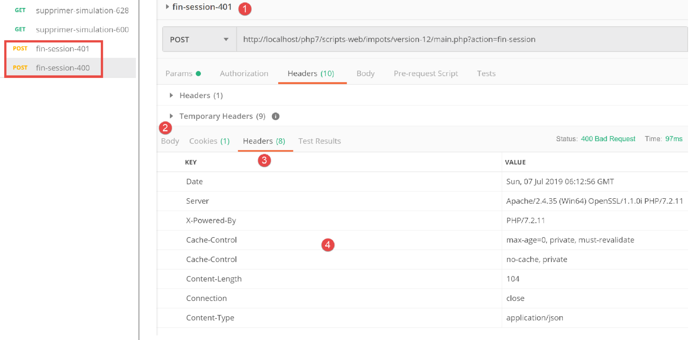
Above:
- in [3-4], the session cookie is not in the server’s response. This is normal. The server sends it only once: at the start of a new web session;
Now let's execute a valid [logout] action:

Above:
- in [1-3], a valid [end-session] action;
- in [4-7], the server's JSON response;
Let’s look at the HTTP headers sent in the server’s response:

- in [3], the server sends the [Set-Cookie] header, indicating that a new web session is starting;
23.12. Server response types
23.12.1. Introduction
Let’s revisit the application’s overall architecture:

We will present the possible response types [3a]. These are grouped in the [Responses] folder of the project:

We have already introduced the [JsonResponse] class in the linked section. It implements the [InterfaceResponse] interface and extends the [ParentResponse] class. This is also the case for the other two classes, [XmlResponse] and [HtmlResponse].
Let’s review the definition of the [InterfaceResponse] interface:
<?php
namespace Application;
// symfony dependencies
use Symfony\Component\HttpFoundation\Request;
use Symfony\Component\HttpFoundation\Session\Session;
interface InterfaceResponse {
// Request $request : requête en cours de traitement
// Session $session: the web application session
// array $config: application configuration
// int statusCode: HTTP response status code
// array $content: server response
// array $headers: HTTP headers to be added to the response
// Logger $logger: the logger for writing logs
public function send(
Request $request = NULL,
Session $session = NULL,
array $config,
int $statusCode,
array $content,
array $headers,
Logger $logger = NULL): void;
}
- lines 19–27: the [InterfaceResponse] interface has a single method [send] to send the response to the client;
- lines 11–17: the meaning of the various parameters of the [send] method;
- lines 23–25: the parameters [$statusCode, $content, $headers] are the standard response from the application’s secondary controllers. However, the response may require additional information. Therefore, we provide it with the first three parameters (lines 20–22), which give it access to all information regarding the request, the session, and the configuration;
- line 26: the response requires the [Logger] because it will log the response sent to the client;
Let’s now review the code for the [ParentResponse] class, the parent class of the three response types that abstracts what they have in common: the actual sending of a text response to the client:
<?php
namespace Application;
// symfony dependencies
use Symfony\Component\HttpFoundation\Response;
class ParentResponse {
// int $statusCode: HTTP response status code
// string $content: the body of the response to be sent
// depending on the case, this is a jSON, XML, HTML string
// array $headers: HTTP headers to be added to the response
public function sendResponse(
int $statusCode,
string $content,
array $headers): void {
// preparing the server's text response
$response = new Response();
$response->setCharset("utf-8");
// status code
$response->setStatusCode($statusCode);
// headers
foreach ($headers as $text => $value) {
$response->headers->set($text, $value);
}
// we send the answer
$response->setContent($content);
$response->send();
}
}
Comments
- lines 10–13: the meaning of the three parameters of the [send] method;
- line 17: note that the response body is of type [string] and therefore ready to be sent (line 30);
- line 22: the response will contain UTF-8 characters;
- line 24: HTTP status code of the response;
- lines 26–28: adding the HTTP headers provided by the calling code;
- lines 30–31: sending the response to the client;
Finally, let’s review the code for the main controller that requests the response be sent to the client:
// on ajoute les clés [action, état] à la réponse du contrôleur
$content = ["action" => $action, "état" => $état] + $content;
// on instancie l'objet [Response] chargée d'envoyer la réponse au client
$response = __NAMESPACE__ . $config["types"][$type]["response"];
(new $response())->send($request, $session, $config, $statusCode, $content, $headers, $logger);
// la réponse a été envoyée - on libère les ressources
$logger->close();
exit;
- line 4: we set the name of the [Response] class to instantiate;
- line 5: we instantiate it and send the response to the client using the [send($request, $session, $config, $statusCode, $content, $headers, $logger)] method. Because they implement the same [InterfaceResponse] interface, the [send] methods of the different response types all have the same signature;
23.12.2. The [JsonResponse] class
It has already been presented in the linked section. However, we are reproducing its code here to better highlight the consistency of the three response classes:
The [JsonResponse] class implements the [InterfaceResponse] interface as follows:
<?php
namespace Application;
// symfony dependencies
use Symfony\Component\Serializer\Encoder\JsonEncode;
use Symfony\Component\Serializer\Encoder\JsonEncoder;
use Symfony\Component\Serializer\Normalizer\ObjectNormalizer;
use Symfony\Component\Serializer\Serializer;
use \Symfony\Component\HttpFoundation\Request;
use \Symfony\Component\HttpFoundation\Session\Session;
class JsonResponse extends ParentResponse implements InterfaceResponse {
// Request $request : requête en cours de traitement
// Session $session: the web application session
// array $config: application configuration
// int statusCode: HTTP response status code
// array $content: server response
// array $headers: HTTP headers to be added to the response
// Logger $logger: the logger for writing logs
public function send(
Request $request = NULL,
Session $session = NULL,
array $config,
int $statusCode,
array $content,
array $headers,
Logger $logger = NULL): void {
// symfony serializer preparation
$serializer = new Serializer(
[
// required for object serialization
new ObjectNormalizer()],
// encoder jSON
// for options, make OU between the different options
[new JsonEncoder(new JsonEncode([JsonEncode::OPTIONS => JSON_UNESCAPED_UNICODE]))]
);
// serialization jSON
$json = $serializer->serialize($content, 'json');
// headers
$headers = array_merge($headers, ["content-type" => "application/json"]);
// sending reply
parent::sendResponse($statusCode, $json, $headers);
// log
if ($logger !== NULL) {
$logger->write("réponse=$json\n");
}
}
}
Comments
- line 13: the class implements the [InterfaceResponse] interface;
- line 13: the class extends the [ParentResponse] class. All [Response] types extend this class. It is this parent class that sends the response to the client (line 46). Because this code was common to all [Response] types, it was factored into a parent class;
- lines 33–40: instantiation of the [Symfony] serializer, which will convert the server response [$content] into a JSON string (line 42);
- lines 34–36: the first parameter of the [Serializer] constructor is an array. In it, we place an instance of the [ObjectNormalizer] class required for object serialization. In this application, this occurs with a list of simulations where each simulation is an instance of the [Simulation] class;
- line 39: the second parameter of the [Serializer] constructor is also an array: we place all the encoders used in a serialization (XML, JSON, CSV, etc.) into it;
- line 39: there will be only one encoder here, of type [JsonEncoder]. The parameterless constructor might have been sufficient. Here, we passed a [JsonEncode] parameter to the constructor, solely to pass JSON encoding options;
- line 39: the [JsonEncode] constructor parameter is an array of options. Here we use the [JSON_UNESCAPED_UNICODE] option to request that the UTF-8 characters in the JSON string be rendered natively rather than “escaped”;
- line 42: the body of the HTTP response is serialized into JSON using the previous serializer;
- line 44: we add the HTTP header that tells the client we are sending JSON;
- line 46: the parent class is asked to send the response to the client;
- lines 48–50: we log the JSON response;
23.12.3. The [XmlResponse] class
The [XmlResponse] class implements the [InterfaceResponse] interface as follows:
<?php
namespace Application;
// symfony dependencies
use Symfony\Component\HttpFoundation\Request;
use Symfony\Component\HttpFoundation\Session\Session;
use Symfony\Component\Serializer\Encoder\JsonEncode;
use Symfony\Component\Serializer\Encoder\JsonEncoder;
use Symfony\Component\Serializer\Encoder\XmlEncoder;
use Symfony\Component\Serializer\Normalizer\ObjectNormalizer;
use Symfony\Component\Serializer\Serializer;
class XmlResponse extends ParentResponse implements InterfaceResponse {
// Request $request : requête en cours de traitement
// Session $session: the web application session
// array $config: application configuration
// int statusCode: HTTP response status code
// array $content: server response
// array $headers: HTTP headers to be added to the response
// Logger $logger: the logger for writing logs
public function send(
Request $request = NULL,
Session $session = NULL,
array $config,
int $statusCode,
array $content,
array $headers,
Logger $logger = NULL): void {
// symfony serializer preparation
$serializer = new Serializer(
// required for object serialization
[new ObjectNormalizer()],
[
// serialization XML
new XmlEncoder(
[
XmlEncoder::ROOT_NODE_NAME => 'root',
XmlEncoder::ENCODING => 'utf-8'
]
),
// serialization jSON
new JsonEncoder(new JsonEncode([JsonEncode::OPTIONS => JSON_UNESCAPED_UNICODE]))
]
);
// serialization XML
$xml = $serializer->serialize($content, 'xml');
// headers
$headers = array_merge($headers, ["content-type" => "application/xml"]);
// sending reply
parent::sendResponse($statusCode, $xml, $headers);
// log
if ($logger !== NULL) {
// log in jSON
$log = $serializer->serialize($content, 'json');
$logger->write("réponse=$log\n");
}
}
}
Comments
- lines 34–48: instantiation of a Symfony serializer. The constructor accepts two array-type parameters;
- line 36: the first array contains an instance of type [ObjectNormalizer] used in object serialization;
- lines 37–47: the second array contains the encoders used for serialization. Various types of serialization can be configured with the same serializer;
- lines 38–44: the XML encoder;
- line 41: the root of the generated XML code is set. It will have the form <root>[other XML tags]</root>;
- line 42: the encoding will use UTF-8 characters;
- line 46: the JSON encoder. This will be used to log the response in the [logs.txt] file, which is in JSON format;
- line 50: the body of the response sent to the client is serialized in XML;
- line 52: we add to the headers received as parameters (line 30) the HTTP header that tells the client we are sending an XML document;
- line 54: the parent class actually sends the response to the client;
- Lines 56–60: JSON log of the response;
23.12.4. Tests [Postman]
We have already performed all possible error tests in JSON. There is nothing further to do in XML. We show two examples of XML responses:

Above:
- in [1-3], the XML session start request;
- in [4-7], the server’s XML response;
From now on, all server responses will be in XML. We can reuse all the requests already used in [Postman] without changing them, and we will get an XML response for each one. Let’s perform a successful authentication, for example:

Above:
- in [1-3], a valid authentication request;
- in [4-7], the server’s XML response;
23.12.5. The [HtmlResponse]
When the session type is [html], an object of type [HtmlResponse] is instantiated to send the response to the client. This will send the client an HTML stream that depends on the status code returned by the secondary controller that processed the action. This [status=>view] mapping is defined in the [config.json] configuration file as follows:
"vues": {
"vue-authentification.php": [700, 221, 400],
"vue-calcul-impot.php": [200, 300, 341, 350, 800],
"vue-liste-simulations.php": [500, 600]
},
"vue-erreurs": "vue-erreurs.php"
This configuration reads as follows: [‘view name’ => ‘states associated with this view’]
- line 2: if the secondary controller returned a state from the array [700, 221, 400], then the view [vue-authentification.php] must be displayed;
- line 3: if the secondary controller returned an array [200, 300, 341, 350, 800], then display the view [tax-calculation-view.php];
- line 4: if the secondary controller returned an array [500, 600], then display the view [view-simulation-list.php];
- line 6: if the secondary controller returned a value not found in any of the previous arrays, then display the view [vue-erreurs.php];
The views are located in the [Views] folder of the project:
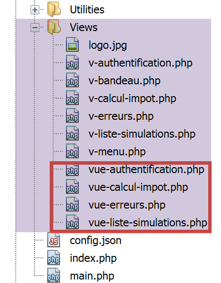
The code for the [HtmlResponse] class is as follows:
<?php
namespace Application;
// symfony dependencies
use Symfony\Component\HttpFoundation\Request;
use Symfony\Component\HttpFoundation\Session\Session;
use Symfony\Component\Serializer\Encoder\JsonEncode;
use Symfony\Component\Serializer\Encoder\JsonEncoder;
use Symfony\Component\Serializer\Normalizer\ObjectNormalizer;
use Symfony\Component\Serializer\Serializer;
class HtmlResponse extends ParentResponse implements InterfaceResponse {
// Request $request : requête en cours de traitement
// Session $session: the web application session
// array $config: application configuration
// int statusCode: HTTP response status code
// array $content: server response
// array $headers: HTTP headers to be added to the response
// Logger $logger: the logger for writing logs
public function send(
Request $request = NULL,
Session $session = NULL,
array $config,
int $statusCode,
array $content,
array $headers,
Logger $logger = NULL): void {
// symfony serializer preparation
$serializer = new Serializer(
[
// for object serialization
new ObjectNormalizer()],
[
// for jSON serialization of the response log
new JsonEncoder(new JsonEncode([JsonEncode::OPTIONS => JSON_UNESCAPED_UNICODE]))
]
);
// the HTML response depends on the status code returned by the controller
$état = $content["état"];
// a view corresponds to a state - look for it in the application configuration
// view list
$vues = array_keys($config["vues"]);
$trouvé = false;
$i = 0;
// browse the list of views
while (!$trouvé && $i < count($vues)) {
// states associated with view n° i
$états = $config["vues"][$vues[$i]];
// is the state you're looking for in the states associated with view n° I?
if (in_array($état, $états)) {
// the view displayed will be view n° i
$vueRéponse = $vues[$i];
$trouvé = true;
}
// next view
$i++;
}
// found?
if (!$trouvé) {
// if no view exists for the current state of the application
// render error view
$vueRéponse = $config["vue-erreurs"];
}
// retrieve the HTML view to be displayed in a character string
ob_start();
require __DIR__ . "/../Views/$vueRéponse";
$html = ob_get_clean();
// we indicate in the headers that we're going to send HTML
$headers = array_merge($headers, ["content-type" => "text/html"]);
// the parent class handles the actual sending of the response
parent::sendResponse($statusCode, $html, $headers);
// log in jSON of the response without the HTML
if ($logger !== NULL) {
// log in jSON of the response from the secondary controller that processed the action
$log = $serializer->serialize($content, 'json');
$logger->write("réponse=$log\n");
}
}
}
Comments
- lines 32–41: we instantiate a Symfony serializer. This is necessary for the JSON log of the response from the controller that handled the action (lines 72–82);
- lines 42–57: We search the application configuration for the view that should be displayed. This depends on the status code returned by the controller that handled the action. This code is in [$content[‘status’]] (line 43);
- lines 42–61: the view corresponding to this state is searched for;
- lines 62–67: if no view is found, then the HTML application is in an abnormal state. We will explain this concept of abnormal states in more detail later. In this case, an error view is displayed;
- lines 68–70: the PHP code of the selected view is interpreted, and the result is stored in the variable [$html] (line 71);
- This code warrants some explanation. Let’s imagine that the selected view is [vue-authentification.php], which displays a web authentication form:
- line 69: the [ob_start] function initiates what the documentation calls an output buffer. Everything written by print, require, and similar operations—which would normally be sent immediately to the client—is placed in an output buffer (ob=output buffer) without being sent to the client;
- line 70: the view [authentication-view.php] is loaded; this is a dynamic HTML view containing PHP code. Two things then happen:
- the PHP code in the [vue-authentification.php] view is loaded and interpreted. The result is a view we’ll call [vue-authentification.html], which contains only HTML code—and possibly CSS and JavaScript—but no more PHP;
- this HTML code is normally sent to the client. This is actually the case for any text encountered by the PHP interpreter that is not PHP code. Due to the output buffering, this HTML code is placed in the output buffer without being sent to the client;
- Line 71: The [ob_get_clean] function does two things:
- it places the contents of the output buffer into the [$html] variable, i.e., the [vue-authentification.html] page that was placed there;
- it clears the output buffer. As far as the buffer is concerned, it’s as if nothing had happened. Furthermore, the client still hasn’t received anything;
- Line 70: We are currently executing the [HtmlResponse] class, which is located in the [Responses] folder. To find the view, we must therefore go up one level [..] and then navigate to the [Views] folder. [__DIR__] is the absolute path of the folder containing the currently executing script; in our example, the folder [C:/myprograms/laragon-lite/www/php7/scripts-web/impots/13/Responses];
- line 73: we add to the HTTP headers received as parameters (line 29) the header that tells the client we are going to send them HTML;
- line 75: we ask the parent class to actually send the response to the client;
- lines 77–81: log the response [$content] provided by the secondary controller that processed the current action in JSON;
23.12.6. Tests [Postman]
To truly test the session’s HTML mode, we would need to review all the views. We’ll do that later. We’ll perform the following test:
Let’s look at the list of views in the configuration file:
"vues": {
"vue-authentification.php": [700, 221, 400],
"vue-calcul-impot.php": [200, 300, 341, 350, 800],
"vue-liste-simulations.php": [500, 600]
},
"vue-erreurs": "vue-erreurs.php"
We can identify the context generating some of the status codes above by examining the [Postman] tests performed:

We can see that status code [700] corresponds to a successful [init-session] action [2]. Above, we have a JSON response, but it could also be XML or HTML. It is the latter case that will be tested. According to the configuration file, the [vue-authentification.php] view constitutes the HTML response. Let’s verify.

Above:
- in [1-3], we initialize an HTML session. We therefore expect an HTML response;
- in [4-8], the HTML response from the server;
- tab [8] provides a preview of the received HTML code;
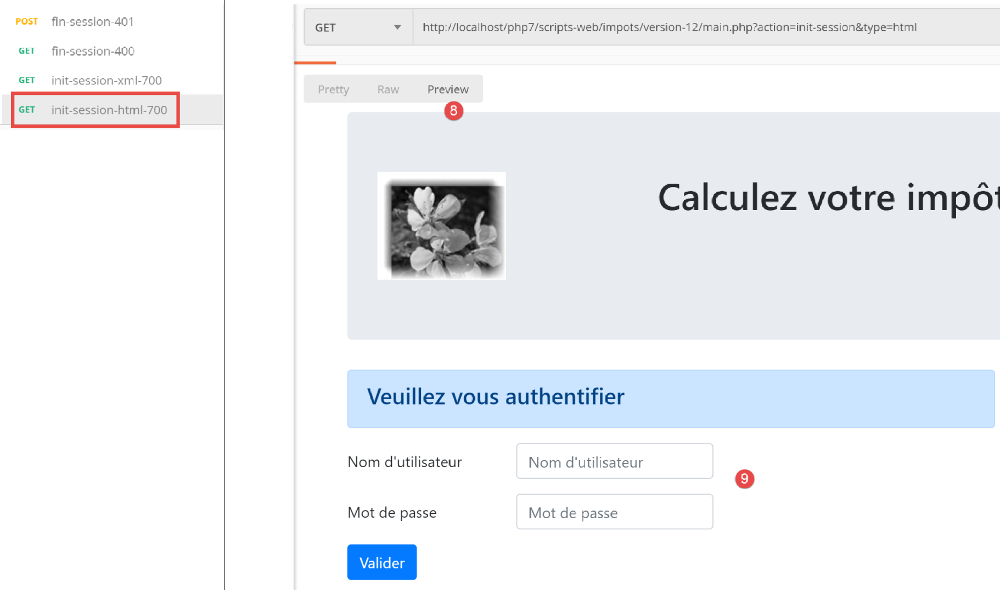
- in [8-9], a preview of the HTML view;
23.13. The HTML Web Application
23.13.1. Overview of Views
The HTML web application will use four views:
The authentication view:

The tax calculation view:

The simulation list view:

The unexpected errors view:
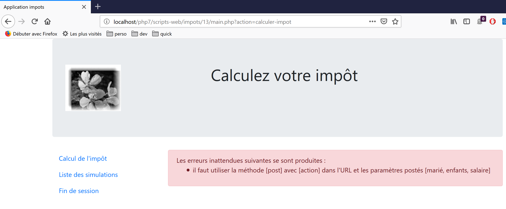
We will describe these views one by one.
23.13.2. The authentication view
23.13.2.1. Overview of the view
The authentication view is as follows:

The view consists of two elements that we will call fragments:
- fragment [1] is generated by a script [v-banner.php];
- fragment [2] is generated by a script [v-authentication.php];
The authentication view is generated by the following page [vue-authentification.php]:
<?php
// page test data
// encapsulate paged data in $page
…
?>
<!doctype html>
<html lang="fr">
<head>
<!-- Required meta tags -->
<meta charset="utf-8">
<meta name="viewport" content="width=device-width, initial-scale=1, shrink-to-fit=no">
<!-- Bootstrap CSS -->
<link rel="stylesheet" href="https://stackpath.bootstrapcdn.com/bootstrap/4.1.3/css/bootstrap.min.css" integrity="sha384-MCw98/SFnGE8fJT3GXwEOngsV7Zt27NXFoaoApmYm81iuXoPkFOJwJ8ERdknLPMO" crossorigin="anonymous">
<title>Application impots</title>
</head>
<body>
<div class="container">
<!-- bandeau sur 1 ligne et 12 colonnes -->
<?php require "v-bandeau.php"; ?>
<!-- formulaire d'authentification sur 9 colonnes -->
<div class="row">
<div class="col-md-9">
<?php require "v-authentification.php" ?>
</div>
</div>
<?php
// if error - displays an error alert
if ($modèle->error) {
print <<<EOT
<div class="row">
<div class="col-md-9">
<div class="alert alert-danger" role="alert">
Les erreurs suivantes se sont produites :
<ul>$modèle->erreurs</ul>
</div>
</div>
</div>
EOT;
}
?>
</div>
</body>
</html>
Comments
- line 7: an HTML document begins with this line;
- lines 8–44: the HTML page is enclosed within the <html> and </html> tags;
- lines 9–16: the HTML document’s header (head);
- line 11: the <meta charset> tag indicates that the document is encoded in UTF-8;
- line 12: the <meta name='viewport'> tag sets the initial viewport display: across the full width of the screen displaying it (width) at its initial size (initial-scale) without resizing to fit a smaller screen (shrink-to-fit);
- line 14: the <link rel='stylesheet'> tag specifies the CSS file that governs the viewport’s appearance. Here, we are using the Bootstrap 4.1.3 CSS framework [https://getbootstrap.com/docs/4.0/getting-started/introduction/] ;
- line 15: the title tag sets the page title:

- lines 17–43: the body of the web page is enclosed within the body and /body tags;
- lines 18–42: the <div> tag delimits a section of the displayed page. The [class] attributes used in the view all refer to the Bootstrap CSS framework. The <div class=’container’> tag delimits a Bootstrap container;
- Line 20: We include the script [v-banner.php]. This script generates the page’s banner [1]. We’ll describe it shortly;
- Lines 22–26: The <div class=’row’> tag defines a Bootstrap row. These rows consist of 12 columns;
- line 23: the <div class=’col-md-9’> tag defines a 9-column section;
- line 24: we include the script [v-authentification.php] which displays the page’s authentication form [2]. We’ll describe it shortly;
- line 27: the <?php tag inserts PHP code into the HTML page. This code is executed before the HTML page is rendered and can modify it;
- line 29: all dynamic data in the displayed view will be encapsulated in a [$model] object of type [stdClass]. This is an arbitrary choice. We could have chosen an associative array instead to achieve the same result;
- line 29: authentication fails if the user enters incorrect credentials. In this case, the authentication view is redisplayed with an error message. The [$model→error] attribute indicates whether to display this error message;
- Lines 30–39: This syntax outputs all text placed between the PHP symbols <<<EOT (line 30—you can use any text you want in place of EOT=End Of Text) and the EOT symbol on line 39 (must be identical to the symbol used on line 30). The symbol must be written in the first column of line 39. PHP variables located in the text between the two EOT symbols are interpreted;
- lines 33–36: define an area with a pink background (class="alert alert-danger") (line 33);

- line 34: text;
- line 35: the HTML tag <ul> (unordered list) displays a bulleted list. Each list item must have the syntax <li>item</li>;
Let’s note the dynamic elements to be defined in this code:
- [$model→error]: to display an error message;
- [$template→errors]: a list (in the HTML sense) of error messages;
23.13.2.2. The [v-bandeau.php] fragment
The [v-bandeau.php] fragment displays the top banner of all views in the web application:

The code for the [v-banner.php] fragment is as follows:
<!-- Bootstrap Jumbotron -->
<div class="jumbotron">
<div class="row">
<div class="col-md-4">
<img src="<?= $logo ?>" alt="Cerisier en fleurs" />
</div>
<div class="col-md-8">
<h1>
Calculez votre impôt
</h1>
</div>
</div>
</div>
Comments
- lines 2–13: The banner is wrapped in a Bootstrap Jumbotron section [<div class="jumbotron">]. This Bootstrap class styles the displayed content in a specific way to make it stand out;
- lines 3–12: a Bootstrap row;
- lines 4-6: an image [img] is placed in the first four columns of the row;
- line 5: the syntax [<?= $logo ?>] is equivalent to the syntax [<?php print $logo ?>]. In other words, the value of the [src] attribute will be the value of the PHP variable [$logo];
- lines 7–11: the remaining 8 columns of the row (remember there are 12 in total) will be used to display text (line 9) in large font size (<h1>, lines 8–10);
Dynamic elements:
- [$logo]: URL of the image displayed in the banner;
23.13.2.3. The [v-authentification.php] fragment
The [v-authentication.php] fragment displays the web application’s authentication form:

The code for the [v-authentication.php] fragment is as follows:
<!-- form HTML - post its values with the [authenticate-user] action -->
<form method="post" action="main.php?action=authentifier-utilisateur">
<!-- title -->
<div class="alert alert-primary" role="alert">
<h4>Veuillez vous authentifier</h4>
</div>
<!-- bootstrap form -->
<fieldset class="form-group">
<!-- 1st line -->
<div class="form-group row">
<!-- wording -->
<label for="user" class="col-md-3 col-form-label">Nom d'utilisateur</label>
<div class="col-md-4">
<!-- text input field -->
<input type="text" class="form-control" id="user" name="user"
placeholder="Nom d'utilisateur" value="<?= $modèle->login ?>">
</div>
</div>
<!-- 2nd line -->
<div class="form-group row">
<!-- wording -->
<label for="password" class="col-md-3 col-form-label">Mot de passe</label>
<!-- text input field -->
<div class="col-md-4">
<input type="password" class="form-control" id="password" name="password"
placeholder="Mot de passe">
</div>
</div>
<!-- submit] button on a 3rd line-->
<div class="form-group row">
<div class="col-md-2">
<button type="submit" class="btn btn-primary">Valider</button>
</div>
</div>
</fieldset>
</form>
Comments
- Lines 2–39: The <form> tag defines an HTML form. This form generally has the following characteristics:
- it defines input fields (<input> tags on lines 17 and 27);
- It has a [submit] button (line 34) that sends the entered values to the URL specified in the [action] attribute of the [form] tag (line 2). The HTTP method used to make a request to this URL is specified in the [method] attribute of the [form] tag (line 2);
- here, when the user clicks the [Submit] button (line 34), the browser will POST (line 2) the values entered in the form to the URL [main.php?action=authentifier-utilisateur] (line 2);
- the posted values are the values entered by the user in the input fields on lines 17 and 27. They will be posted in the format [user=xx&password=yy]. The parameter names [user, password] correspond to the [name] attributes of the input fields on lines 17 and 27;
- Lines 5–7: A Bootstrap section to display a title on a blue background:

- lines 10–37: a Bootstrap form. All form elements will then be styled in a specific way;
- lines 12–20: define the first row of the form:
- line 14 defines the label [1] across three columns. The [for] attribute of the [label] tag links the label to the [id] attribute of the input field on line 17;
- lines 15–19: place the input field within a four-column layout;
- line 17: the HTML [input] tag defines an input field. It has several attributes:
- [type='text']: this is a text input field. You can type anything into it;
- [class='form-control']: Bootstrap style for the input field;
- [id='user']: identifier for the input field. This identifier is generally used by CSS and JavaScript code;
- [name='user']: the name of the input field. The value entered by the user will be submitted by the browser under this name [user=xx];
- [placeholder='prompt']: the text displayed in the input field when the user has not yet typed anything;

- [value='value']: the text 'value' will be displayed in the input field as soon as it appears, before the user enters anything else. This mechanism is used in case of an error to display the input that caused the error. Here, this value will be the value of the PHP variable [$model->login];
- lines 21–30: similar code for the password input field;
- line 27: [type='password'] creates a text input field (you can type anything) but the characters entered are hidden:

- lines 32–36: a third line for the [Submit] button;
- line 34: because it has the [type="submit"] attribute, clicking this button triggers the browser to send the entered values to the server, as explained earlier. The CSS attribute [class="btn btn-primary"] displays a blue button:

There is one last thing to explain. Line 2: the [action="main.php?action=authentifier-utilisateur"] attribute defines an incomplete URL (it does not start with http://machine:port/chemin). In our example, all of the application’s URLs are in the form [http://localhost/php7/scripts-web/impots/version-12/main.php?action=xx]. The authentication view will be accessed via various URLs:
- [http://localhost/php7/scripts-web/impots/version-12/main.php?action=init-session&type=html];
- [http://localhost/php7/scripts-web/impots/version-12/main.php?action=authentifier-utilisateur]
These URLs point to a document [main.php] located at [http://localhost/php7/scripts-web/impots/version-12]. This applies to all URLs in this application. The parameter [action="main.php?action=authentifier-utilisateur"] will be prefixed with this path when the entered values are submitted. These values will therefore be posted to the URL [http://localhost/php7/scripts-web/impots/version-12/main.php?action=authentifier-utilisateur].
23.13.2.4. Visual Tests
We can test the views well before integrating them into the application. The goal here is to test their visual appearance. We will gather all the test views in the [Tests] folder of the project:

To test the view [vue-authentification.php], we need to create the data model that it will display:
<?php
// page test data
//
// calculate the view model
$modèle = getModelForThisView();
function getModelForThisView(): object {
// encapsulate paged data in $modèle
$modèle = new \stdClass();
// user code
$modèle->login = "albert";
// error list
$modèle->error = TRUE;
$erreurs = ["erreur1", "erreur2"];
// build a HTML list of errors
$content = "";
foreach ($erreurs as $erreur) {
$content .= "<li>$erreur</li>";
}
$modèle->erreurs = $content;
// banner image
$modèle->logo = "http://localhost/php7/scripts-web/impots/version-12/Tests/logo.jpg";
// we render the model
return $modèle;
}
?>
<!-- document HTML -->
<!doctype html>
<html lang="fr">
<head>
<!-- Required meta tags -->
…
</head>
<body>
….
</body>
</html>
Comments
- lines 1–5: The authentication view has dynamic parts controlled by the [$model] object. This object is called the view model. According to one of the two definitions given for the acronym MVC, this represents the M in MVC;
- line 5: the view model is calculated by the [getModelForThisView] function;
- line 9: the view model will be encapsulated in a [stdClass] type;
- lines 10–22: test values are defined for the dynamic elements of the authentication view;
Visual testing can be performed from NetBeans:

We continue these visual tests until we are satisfied with the result.
23.13.2.5. Calculating the view model
Once the visual appearance of the view has been determined, we can proceed to calculate the view model under real-world conditions. Let’s review the state codes that lead to this view. They can be found in the configuration file:
"vues": {
"vue-authentification.php": [700, 221, 400],
"vue-calcul-impot.php": [200, 300, 341, 350, 800],
"vue-liste-simulations.php": [500, 600]
},
"vue-erreurs": "vue-erreurs.php"
So, the status codes [700, 221, 400] are what trigger the display of the authentication view. To understand the meaning of these codes, we can refer to the [Postman] tests performed on the JSON application:
- [init-session-json-700]: 700 is the status code following a successful [init-session] action: the authentication form is then displayed empty;
- [authenticate-user-221]: 221 is the status code following a failed [authenticate-user] action (unrecognized credentials): the authentication form is then displayed so that the credentials can be corrected;
- [end-session-400]: 400 is the status code following a successful [end-session] action: the empty authentication form is then displayed;
Now that we know when the authentication form should be displayed, we can calculate its template in [authentication-view.php]:

The code for calculating the view template [vue-authentification.php] is as follows:
<?php
// we inherit the following variables
// Request $request : la requête en cours
// Session $session: the application session
// array $config: application configuration
// array $content: controller response
//
// symfony dependencies
use Symfony\Component\HttpFoundation\Request;
use Symfony\Component\HttpFoundation\Session\Session;
// calculate the view model
$modèle = getModelForThisView($request, $session, $config, $content);
function getModelForThisView(Request $request, Session $session, array $config, array $content): object {
// encapsulate paged data in $modèle
$modèle = new stdClass();
// application status
$état = $content["état"];
// the model depends on the state
switch ($état) {
case 700:
case 400:
// case of empty form display
$modèle->login = "";
// no error to display
$modèle->error = FALSE;
break;
case 221:
// false authentication
// the user initially entered is redisplayed
$modèle->login = $request->request->get("user");
// there is an error to display
$modèle->error = TRUE;
// list HTML of error msg - here only one
$modèle->erreurs = "<li>Echec de l'authentification</li>";
}
// result
return $modèle;
}
?>
<!-- document HTML -->
<!doctype html>
<html lang="fr">
<head>
…
</head>
<body>
…
</body>
</html>
Comments
- lines 3–6: the variables inherited from the [HtmlResponse] class are declared; this class uses a [require] to display the [vue-authentification.php] view;
- lines 9-10: the Symfony classes used in the view code;
- lines 15-40: the [getModelForThisView] function is responsible for calculating the view model;
- line 19: the state code returned by the controller that processed the current action is retrieved;
- lines 21–37: the model depends on this state code;
- lines 22–28: case where a blank authentication form must be displayed;
- lines 29–37: case of failed authentication: the user’s entered username is displayed, along with an error message. The user can then try another authentication attempt;
A specific template has been written for the banner [v-bandeau.php]:
<?php
// logo
$scheme = $request->server->get('REQUEST_SCHEME'); // http
$host = $request->server->get('SERVER_NAME'); // localhost
$port = $request->server->get('SERVER_PORT'); // 80
$uri = $request->server->get('REQUEST_URI'); // /php7/scripts-web/impots/version-12/main.php?action=xxx
$champs = [];
preg_match("/(.+)\/.+?$/", $uri, $champs);
$root = $champs[1]; // /php7/scripts-web/impots/version-12
$modèle->logo = "$scheme://$host:$port$root/Views/logo.jpg"; // http://localhost:80/php7/scripts-web/impots/version-12/Views/logo.jpg
?>
<!-- Bootstrap Jumbotron -->
<div class="jumbotron">
<div class="row">
<div class="col-md-4">
<img src="<?= $modèle->logo ?>" alt="Cerisier en fleurs" />
</div>
<div class="col-md-8">
<h1>
Calculez votre impôt
</h1>
</div>
</div>
</div>
Comments
- Line 16 uses the variable [$template→logo], which is the URL of the banner logo. Rather than calculating this variable four times for the four views of the application, this calculation is factored into the fragment [v-banner.php];
- Lines 1–11 show how to construct the URL [http://localhost:80/php7/scripts-web/impots/version-12/Views/logo.jpg] using information found in the server environment [$request→server];
23.13.2.6. Tests [Postman]
We have already created requests that return the status codes [700, 221, 400], which display the authentication view. Let’s review them:
- [init-session-html-700]: 700 is the status code following a successful [init-session] action: the empty authentication form is then displayed;
- [authenticate-user-221]: 221 is the status code following a failed [authenticate-user] action (unrecognized credentials): the authentication form is then displayed so that the credentials can be corrected;
- [end-session-400]: 400 is the status code following a successful [end-session] action: the empty authentication form is then displayed;
Simply reuse them and check if they correctly display the authentication view. We will show only two tests here:
- [init-session-html-700]: start of an HTML session;

- [authenticate-user-221]: authenticating user [x, x];

Above:
- the request sent the string [user=x&password=x];
- in [4], an error message is displayed;
- in [3], the incorrect user was displayed again;
23.13.2.7. Conclusion
We were able to test the view [vue-authentification.php] without having written the other views. This was possible because:
- all controllers are written;
- [Postman] allows us to send requests to the server without needing the views. When writing controllers, you must be aware that anyone can do this. You must therefore be prepared to handle requests that no view would allow. They are manually created in [Postman]. You should never assume a priori that “this request is impossible.” You must verify;
23.13.3. The tax calculation view
23.13.3.1. View Overview
The tax calculation view is as follows:

The view has three parts:
- 1: The top banner is generated by the fragment [v-bandeau.php] already presented;
- 2: the tax calculation form generated by the fragment [v-calcul-impot.php];
- 3: a menu with two links, generated by the fragment [v-menu.php];
The tax calculation view is generated by the following script [vue-calcul-impot.php]:
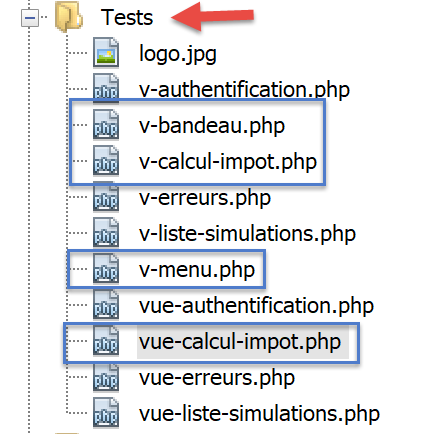
<?php
// we inherit the following variables
// Request $request : la requête en cours
// Session $session: the application session
// array $config: application configuration
// array $content: the response of the controller that processed the action
//
// symfony dependencies
use Symfony\Component\HttpFoundation\Request;
use Symfony\Component\HttpFoundation\Session\Session;
// calculate the view model
$modèle = getModelForThisView($request, $session, $config, $content);
function getModelForThisView(Request $request, Session $session, array $config, array $content): object {
// encapsulate paged data in $modèle
$modèle = new \stdClass();
…
// we render the model
return $modèle;
}
?>
<!-- document HTML -->
<!doctype html>
<html lang="fr">
<head>
<!-- Required meta tags -->
<meta charset="utf-8">
<meta name="viewport" content="width=device-width, initial-scale=1, shrink-to-fit=no">
<!-- Bootstrap CSS -->
<link rel="stylesheet" href="https://stackpath.bootstrapcdn.com/bootstrap/4.1.3/css/bootstrap.min.css" integrity="sha384-MCw98/SFnGE8fJT3GXwEOngsV7Zt27NXFoaoApmYm81iuXoPkFOJwJ8ERdknLPMO" crossorigin="anonymous">
<title>Application impots</title>
</head>
<body>
<div class="container">
<!-- bandeau -->
<?php require "v-bandeau.php"; ?>
<!-- ligne à deux colonnes -->
<div class="row">
<!-- le menu -->
<div class="col-md-3">
<?php require "v-menu.php" ?>
</div>
<!-- le formulaire de calcul -->
<div class="col-md-9">
<?php require "v-calcul-impot.php" ?>
</div>
</div>
<!-- cas du succès -->
<?php
if ($modèle->success) {
// a success alert is displayed
print <<<EOT1
<div class="row">
<div class="col-md-3">
</div>
<div class="col-md-9">
<div class="alert alert-success" role="alert">
$modèle->impôt</br>
$modèle->décôte</br>\n
$modèle->réduction</br>\n
$modèle->surcôte</br>\n
$modèle->taux</br>\n
</div>
</div>
</div>
EOT1;
}
?>
<?php
if ($modèle->error) {
// 9-column error list
print <<<EOT2
<div class="row">
<div class="col-md-3">
</div>
<div class="col-md-9">
<div class="alert alert-danger" role="alert">
L'erreur suivante s'est produite :
<ul>$modèle->erreurs</ul>
</div>
</div>
</div>
EOT2;
}
?>
</div>
</body>
</html>
Comments
- We only comment on new features that haven't been encountered yet;
- line 37: inclusion of the view's top banner in the view's first Bootstrap row;
- lines 41–43: inclusion of the menu, which will occupy three columns of the view’s second Bootstrap row;
- lines 45–47: inclusion of the tax calculation form, which will occupy nine columns of the view’s second Bootstrap row;
- lines 51–69: if the tax calculation succeeds [$model→success=TRUE], then the result of the tax calculation is displayed in a green box (lines 59–65). This box is in the third Bootstrap row of the view (line 54) and occupies nine columns (line 58) to the right of three empty columns (lines 55–57). This box will therefore be immediately below the tax calculation form;
- lines 71–87: if the tax calculation fails [$model→error=TRUE], then an error message is displayed in a pink box (lines 80–83). This frame is in the third Bootstrap row of the view (line 75) and occupies nine columns (line 79) to the right of three empty columns (lines 76–78). This frame will therefore be immediately below the tax calculation form;
23.13.3.2. The fragment [v-calcul-impot.php]
The fragment [v-calcul-impot.php] displays the web application’s login form:

The code for the [v-calcul-impot.php] fragment is as follows:
<!-- form HTML posted -->
<form method="post" action="main.php?action=calculer-impot">
<!-- 12-column message on blue background -->
<div class="col-md-12">
<div class="alert alert-primary" role="alert">
<h4>Remplissez le formulaire ci-dessous puis validez-le</h4>
</div>
</div>
<!-- form elements -->
<fieldset class="form-group">
<!-- first row of 9 columns -->
<div class="row">
<!-- 4-column wording -->
<legend class="col-form-label col-md-4 pt-0">Etes-vous marié(e) ou pacsé(e)?</legend>
<!-- 5-column radio buttons-->
<div class="col-md-5">
<div class="form-check">
<input class="form-check-input" type="radio" name="marié" id="gridRadios1" value="oui" <?= $modèle->checkedOui ?>>
<label class="form-check-label" for="gridRadios1">
Oui
</label>
</div>
<div class="form-check">
<input class="form-check-input" type="radio" name="marié" id="gridRadios2" value="non" <?= $modèle->checkedNon ?>>
<label class="form-check-label" for="gridRadios2">
Non
</label>
</div>
</div>
</div>
<!-- second row of 9 columns -->
<div class="form-group row">
<!-- 4-column wording -->
<label for="enfants" class="col-md-4 col-form-label">Nombre d'enfants à charge</label>
<!-- 5-column numerical entry field for number of children -->
<div class="col-md-5">
<input type="number" min="0" step="1" class="form-control" id="enfants" name="enfants" placeholder="Nombre d'enfants à charge" value="<?= $modèle->enfants ?>">
</div>
</div>
<!-- third row of 9 columns -->
<div class="form-group row">
<!-- 4-column wording -->
<label for="salaire" class="col-md-4 col-form-label">Salaire annuel</label>
<!-- 5-column numeric input field for wages -->
<div class="col-md-5">
<input type="number" min="0" step="1" class="form-control" id="salaire" name="salaire" placeholder="Salaire annuel" aria-describedby="salaireHelp" value="<?= $modèle->salaire ?>">
<small id="salaireHelp" class="form-text text-muted">Arrondissez à l'euro inférieur</small>
</div>
</div>
<!-- fourth row, [submit] button on 5 columns -->
<div class="form-group row">
<div class="col-md-5">
<button type="submit" class="btn btn-primary">Valider</button>
</div>
</div>
</fieldset>
</form>
Comments
- Line 2: The HTML form will be posted (the [method] attribute) to the URL [main.php?action=calculer-impot] (the [action] attribute). The posted values will be the values of the input fields:
- the value of the selected radio button in the form:
- [marié=oui] if the [Oui] radio button is selected (lines 16–22). [marié] is the value of the [name] attribute in line 18, [oui] is the value of the [value] attribute in line 18;
- [married=no] if the [No] radio button is selected (lines 23–28). [married] is the value of the [name] attribute in line 24, and [no] is the value of the [value] attribute in line 24;
- the value of the numeric input field on line 37 in the form [children=xx], where [children] is the value of the [name] attribute on line 37, and [xx] is the value entered by the user via the keyboard;
- the value of the numeric input field on line 46 in the form [salary=xx], where [salary] is the value of the [name] attribute on line 46, and [xx] is the value entered by the user via the keyboard;
- the value of the selected radio button in the form:
Finally, the posted value will be in the form [married=xx&children=yy&salary=zz].
- The entered values will be submitted when the user clicks the [submit] button on line 53;
- Lines 16–30: The two radio buttons:

The two radio buttons are part of the same radio button group because they have the same [name] attribute (lines 18, 24). The browser ensures that within a radio button group, only one is selected at any given time. Therefore, clicking one deselects the one that was previously selected;
- these are radio buttons because of the [type="radio"] attribute (lines 18, 24);
- when the form is displayed (before input), one of the radio buttons must be checked: to do this, simply add the [checked=’checked’] attribute to the relevant <input type="radio"> tag. This is achieved using dynamic variables:
- [<?= $model->checkedYes ?>] on line 18;
- [<?= $model->checkedNo ?>] on line 24;
These variables will be part of the view template.
- Line 37: a numeric input field [type="number"] with a minimum value of 0 [min="0"]. In modern browsers, this means the user can only enter a number >=0. In these same modern browsers, the input can be made using a slider that can be clicked up or down. The [step="1"] attribute on line 37 indicates that the slider will operate in increments of 1. As a result, the slider will only accept integer values ranging from 0 to n in steps of 1. For manual input, this means that numbers with decimals will not be accepted;
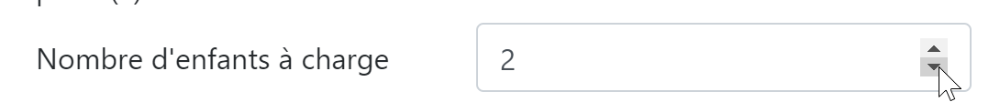
- line 37: on certain screens, the children’s input field must be pre-filled with the last entry made in that field. To do this, we use the [value] attribute, which sets the value to be displayed in the input field. This value will be dynamic and generated by the variable [$model→children];
- line 46: the same explanations apply to salary entry as to those for children;
- line 53: the [submit] button that triggers the POST of the entered values to the URL [main.php?action=calculer-impot];

23.13.3.3. The [v-menu.php] fragment
This fragment displays a menu to the left of the tax calculation form:
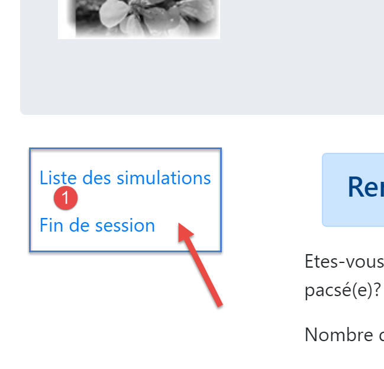
The code for this fragment is as follows:
<!-- bootstrap menu -->
<nav class="nav flex-column">
<?php
// affichage d'une liste de liens HTML
foreach($modèle->optionsMenu as $texte=>$url){
print <<<EOT3
<a class="nav-link" href="$url">$texte</a>
EOT3;
}
?>
</nav>
Comments
- lines 2–11: the HTML tag [nav] encloses a section of HTML document containing navigation links to other documents;
- line 7: the HTML tag [a] introduces a navigation link:
- [$url]: is the URL to which the user is directed when clicking on the [$text] link. The browser then performs a [GET $url] operation. If [$url] is a relative URL, it is prefixed with the root of the URL currently displayed in the browser’s address bar. Thus, to create the link [1] when the browser’s current URL is of the form [http://chemin/main.php?paramètres], we create the link:
- Line 5: The fragment’s template [$modèle→optionsMenu] will be an array of the form:
[‘ Liste des simulations’=>’main.php?action=liste-simulations’,
‘ Fin de session’=>’main.php?action=fin-session’]
- lines 2, 7: the CSS classes [nav, flex-column, nav-link] are Bootstrap classes that define the menu’s appearance;
23.13.3.4. Visual test
We gather these various elements in the [Tests] folder and create a test template for the view [view-tax-calculation.php]:

The data model for the [view-tax-calculation] view will be as follows:
<?php
// page test data
//
// calculate the view model
$modèle = getModelForThisView();
function getModelForThisView(): object {
// encapsulate paged data in $modèle
$modèle = new \stdClass();
// form
$modèle->checkedOui = "";
$modèle->checkedNon = 'checked="checked"';
$modèle->enfants = 2;
$modèle->salaire = 300000;
// message of success
$modèle->success = TRUE;
$modèle->impôt = "Montant de l'impôt : 1000 euros";
$modèle->décôte = "Décôte : 15 euros";
$modèle->réduction = "Réduction : 20 euros";
$modèle->surcôte = "Surcôte : 0 euros";
$modèle->taux = "Taux d'imposition : 14 %";
// error message
$modèle->error = TRUE;
$erreurs = ["erreur1", "erreur2"];
// build a HTML list of errors
$content = "";
foreach ($erreurs as $erreur) {
$content .= "<li>$erreur</li>";
}
$modèle->erreurs = $content;
// menu
$modèle->optionsMenu = [
'Liste des simulations' => 'main.php?action=liste-simulations',
'Fin de session' => 'main.php?action=fin-session'];
// banner image
$modèle->logo = "http://localhost/php7/scripts-web/impots/version-12/Tests/logo.jpg";
// we render the model
return $modèle;
}
?>
<!-- document HTML -->
<!doctype html>
<html lang="fr">
<head>
…
</head>
<body>
…
</body>
</html>
Comments
- Lines 7–39: We initialize all the dynamic parts of the view [vue-calcul-impot.php] and the components [v-calcul-impot.php] and [v-menu.php];
We test the view [vue-calcul-impot.php]:

We get the following result:

We work on this view until we are satisfied with the visual result. We can then proceed to integrate the view into the web application currently under development.
23.13.3.5. Calculating the view model

Once the visual appearance of the view has been determined, we can proceed to calculate the view model under real-world conditions. Let’s review the state codes that lead to this view. They can be found in the configuration file:
"vues": {
"vue-authentification.php": [700, 221, 400],
"vue-calcul-impot.php": [200, 300, 341, 350, 800],
"vue-liste-simulations.php": [500, 600]
},
"vue-erreurs": "vue-erreurs.php"
These status codes [200, 300, 341, 350, 800] are what trigger the display of the authentication view. To understand the meaning of these codes, we can refer to the [Postman] tests performed on the JSON application:
- [authenticate-user-200]: 200 is the status code following a successful [authenticate-user] action; the empty tax calculation form is then displayed;
- [calculate-tax-300]: 300 is the status code following a successful [calculate-tax] action. The calculation form is then displayed with the data entered and the tax amount. The user can then perform another calculation;
- [end-session-400]: 400 is the status code following a successful [end-session] action: the empty authentication form is then displayed;
- The status code [341] is returned for a valid tax calculation, but the lack of a connection to the DBMS causes an error;
- status code [350] is returned for a valid tax calculation, but the lack of a connection to the [Redis] server causes an error;
- status code [800] will be presented later. We have not encountered it yet;
- We have assumed here that the user is using a modern browser. Thus, with the form under consideration, it is not possible to enter negative numbers, non-numeric character strings, or decimal numbers in the input fields [children, salary]. With older browsers, this would be possible. We will treat these errors as unexpected errors and display the [vue-erreurs] view;
Now that we know when the tax calculation form should be displayed, we can calculate its template in [tax-calculation-view.php]:
<?php
// we inherit the following variables
// Request $request : la requête en cours
// Session $session: the application session
// array $config: application configuration
// array $content: the response of the controller that processed the action
//
// symfony dependencies
use Symfony\Component\HttpFoundation\Request;
use Symfony\Component\HttpFoundation\Session\Session;
// calculate the view model
$modèle = getModelForThisView($request, $session, $config, $content);
function getModelForThisView(Request $request, Session $session, array $config, array $content): object {
// encapsulate paged data in $modèle
$modèle = new \stdClass();
// application status
$état = $content["état"];
// the model depends on the state
switch ($état) {
case 200 :
case 800:
// initial display of an empty form
$modèle->success = FALSE; $modèle->errror = FALSE;
$modèle->checkedNon = 'checked="checked"';
$modèle->checkedOui = "";
$modèle->enfants = "";
$modèle->salaire = "";
break;
case 300:
// successful calculation - result display
$modèle->success = TRUE;
$modèle->error = FALSE;
$modèle->impôt = "Montant de l'impôt : {$content["réponse"]["impôt"]} euros";
$modèle->décôte = "Décôte : {$content["réponse"]["décôte"]} euros";
$modèle->réduction = "Réduction : {$content["réponse"]["réduction"]} euros";
$modèle->surcôte = "Surcôte : {$content["réponse"]["surcôte"]} euros";
$modèle->taux = "Taux d'imposition : " . ($content["réponse"]["taux"] * 100) . " %";
// form restored with values entered
$modèle->checkedOui = $request->request->get("marié") === "oui" ? 'checked="checked"' : "";
$modèle->checkedNon = $request->request->get("marié") === "oui" ? "" : 'checked="checked"';
$modèle->enfants = $request->request->get("enfants");
$modèle->salaire = $request->request->get("salaire");
break;
case 341:
// database HS
case 350:
// redis server HS
// form restored with values entered
$modèle->checkedOui = $request->request->get("marié") === "oui" ? 'checked="checked"' : "";
$modèle->checkedNon = $request->request->get("marié") === "oui" ? "" : 'checked="checked"';
$modèle->enfants = $request->request->get("enfants");
$modèle->salaire = $request->request->get("salaire");
// error
$modèle->success = FALSE;
$modèle->error = TRUE;
$modèle->erreurs = "<li>{$content["réponse"]}</li>";
break;
}
//menu
$modèle->optionsMenu = [
"Liste des simulations" => "main.php?action=lister-simulations",
"Fin de session" => "main.php?action=fin-session"];
// we render the model
return $modèle;
}
?>
<!-- document HTML -->
<!doctype html>
<html lang="fr">
<head>
…
<title>Application impots</title>
</head>
<body>
…
</body>
</html>
Comments
- lines 22–30: display of an empty form;
- lines 31–45: successful tax calculation. The entered values and the tax amount are displayed again;
- lines 46–59: case where the tax calculation fails due to the unavailability of one of the servers [Redis] or [MySQL];
- lines 62–64: calculation of the two menu options;
23.13.3.6. [Postman] Tests
The [calculate-tax-300] test returns status code 300, indicating a successful tax calculation:

- in [3], the values that led to the result [2];
Let’s try an error case: error [350] due to the [Redis] server being unavailable:

23.13.4. The simulation list view
23.13.4.1. View overview
The view displaying the list of simulations is as follows:

The view generated by the script [vue-liste-simulations] has three parts:
- 1: the top banner is generated by the [v-bandeau.php] fragment already presented;
- 2: the table of simulations generated by the fragment [v-simulation-list.php];
- 3: a menu with two links, generated by the fragment [v-menu.php];
The simulation view is generated by the following script [simulation-list-view.php]:

<?php
// calculate the view model
$modèle = getModelForThisView();
function getModelForThisView(Request $request, Session $session, array $config, array $content): object {
// encapsulate paged data in $modèle
$modèle = new \stdClass();
…
// we render the model
return $modèle;
}
?>
<!-- document HTML -->
<!doctype html>
<html lang="fr">
<head>
<!-- Required meta tags -->
<meta charset="utf-8">
<meta name="viewport" content="width=device-width, initial-scale=1, shrink-to-fit=no">
<!-- Bootstrap CSS -->
<link rel="stylesheet" href="https://stackpath.bootstrapcdn.com/bootstrap/4.1.3/css/bootstrap.min.css" integrity="sha384-MCw98/SFnGE8fJT3GXwEOngsV7Zt27NXFoaoApmYm81iuXoPkFOJwJ8ERdknLPMO" crossorigin="anonymous">
<title>Application impots</title>
</head>
<body>
<div class="container">
<!-- bandeau -->
<?php require "v-bandeau.php"; ?>
<!-- ligne à deux colonnes -->
<div class="row">
<!-- menu sur trois colonnes-->
<div class="col-md-3">
<?php require "v-menu.php" ?>
</div>
<!-- liste des simulations sur 9 colonnes-->
<div class="col-md-9">
<?php require "v-liste-simulations.php" ?>
</div>
</div>
</div>
</body>
</html>
Comments
- line 28: inclusion of the application banner [1];
- line 33: inclusion of the menu [2]. It will be displayed in three columns below the banner;
- line 37: inclusion of the simulation table [3]. It will be displayed in nine columns below the banner and to the right of the menu;
We have already commented on two of the three fragments of this view:
The fragment [v-liste-simulations.php] is as follows:
<!-- message on blue background -->
<div class="alert alert-primary" role="alert">
<h4>Liste de vos simulations</h4>
</div>
<!-- simulation table -->
<table class="table table-sm table-hover table-striped">
<!-- headers of the six table columns -->
<thead>
<tr>
<th scope="col">#</th>
<th scope="col">Marié</th>
<th scope="col">Nombre d'enfants</th>
<th scope="col">Salaire annuel</th>
<th scope="col">Montant impôt</th>
<th scope="col">Surcôte</th>
<th scope="col">Décôte</th>
<th scope="col">Réduction</th>
<th scope="col">Taux</th>
<th scope="col"></th>
</tr>
</thead>
<!-- table body (data displayed) -->
<tbody>
<?php
$i = 0;
// on affiche chaque simulation en parcourant le tableau des simulations
foreach ($modèle->simulations as $simulation) {
// affichage d'une ligne du tableau avec 6 colonnes - balise <tr>
// colonne 1 : entête ligne (n° simulation) - balise <th scope='row'>
// colonne 2 : valeur paramètre [marié] - balise <td>
// colonne 3 : valeur paramètre [enfants] - balise <td>
// colonne 4 : valeur paramètre [salaire] - balise <td>
// colonne 5 : valeur paramètre [impôt] (de l'impôt) - balise <td>
// colonne 6 : valeur paramètre [surcôte] - balise <td>
// colonne 7 : valeur paramètre [décôte] - balise <td>
// colonne 8 : valeur paramètre [réduction] - balise <td>
// colonne 9 : valeur paramètre [taux] (de l'impôt) - balise <td>
// colonne 10 : lien de suppression de la simulation - balise <td>
print <<<EOT
<tr>
<th scope="row">$i</th>
<td>{$simulation["marié"]}</td>
<td>{$simulation["enfants"]}</td>
<td>{$simulation["salaire"]}</td>
<td>{$simulation["impôt"]}</td>
<td>{$simulation["surcôte"]}</td>
<td>{$simulation["décôte"]}</td>
<td>{$simulation["réduction"]}</td>
<td>{$simulation["taux"]}</td>
<td><a href="main.php?action=supprimer-simulation&numéro=$i">Supprimer</a></td>
</tr>
EOT;
$i++;
}
?>
</tr>
</tbody>
</table>
Comments
- An HTML table is created using the <table> tag (lines 6 and 58);
- The table column headers are enclosed within a <thead> tag (table header, lines 8, 21). The <tr> tag (table row, lines 9 and 20) defines a row. Lines 10–15: the <th> tag (table header) defines a column header. There are therefore ten of them. [scope="col"] indicates that the header applies to the column. [scope="row"] indicates that the header applies to the row;
- lines 23–57: the <tbody> tag encloses the data displayed by the table;
- Lines 40–51: The <tr> tag wraps a row of the table;
- line 41: the <th scope=’row’> tag defines the row header;
- lines 42–50: each td tag defines a column of the row;
- line 27: the list of simulations is found in the model [$model→simulations], which is an associative array;
- line 50: a link to delete the simulation. The URL uses the number displayed in the first column of the table (line 41);
23.13.4.2. Visual Test
We gather these various elements in the [Tests] folder and create a test template for the view [view-simulation-list.php]:

The data model for the [simulation-list-view] view will be as follows:
<?php
// calculate the view model
$modèle = getModelForThisView();
function getModelForThisView(): object {
// encapsulate paged data in $modèle
$modèle = new \stdClass();
// put the simulations in the format expected by the page
$modèle->simulations = [
[
"marié" => "oui",
"enfants" => 2,
"salaire" => 60000,
"impôt" => 448,
"décôte" => 100,
"réduction" => 20,
"surcôte" => 0,
"taux" => 0.14
],
[
"marié" => "non",
"enfants" => 2,
"salaire" => 200000,
"impôt" => 25600,
"décôte" => 0,
"réduction" => 0,
"surcôte" => 8400,
"taux" => 0.45
]
];
// menu options
$modèle->optionsMenu = [
"Calcul de l'impôt" => "main.php?action=afficher-calcul-impot",
"Fin de session" => "main.php?action=fin-session"];
// banner image
$modèle->logo = "http://localhost/php7/scripts-web/impots/version-12/Tests/logo.jpg";
// we render the model
return $modèle;
}
?>
<!-- document HTML -->
<!doctype html>
<html lang="fr">
<head>
…
</head>
<body>
…
</body>
</html>
Comments
- lines 9–30: the table of simulations displayed by the HTML table;
- lines 32–34: the table of menu options;
Let's display this view:

We get the following result:
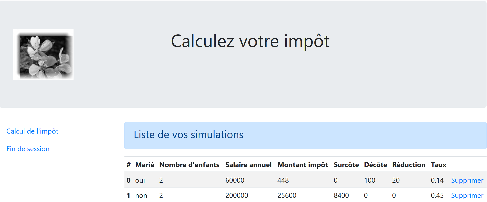
We work on this view until we are satisfied with the visual result. We can then proceed to integrate the view into the web application currently under development.
23.13.4.3. Calculating the view model

Once the visual appearance of the view has been determined, we can proceed to calculate the view model under real-world conditions. Let’s review the state codes that lead to this view. They can be found in the configuration file:
"vues": {
"vue-authentification.php": [700, 221, 400],
"vue-calcul-impot.php": [200, 300, 341, 350, 800],
"vue-liste-simulations.php": [500, 600]
},
"vue-erreurs": "vue-erreurs.php"
It is therefore the status codes [500, 600] that display the simulation view. To find the meaning of these codes, we can refer to the [Postman] tests performed on the JSON application:
- [list-simulations-500]: 500 is the status code following a successful [list-simulations] action: the list of simulations performed by the user is then displayed;
- [delete-simulation-600]: 600 is the status code following a successful [delete-simulation] action. The new list of simulations obtained after this deletion is then displayed;
Now that we know when the list of simulations should be displayed, we can calculate its template in [view-simulation-list.php]:
<?php
// we inherit the following variables
// Request $request : la requête en cours
// Session $session: the application session
// array $config: application configuration
// array $content: controller response
// no errors possible
// array $content: controller response
//
// symfony dependencies
use Symfony\Component\HttpFoundation\Request;
use Symfony\Component\HttpFoundation\Session\Session;
// calculate the view model
$modèle = getModelForThisView($request, $session, $config, $content);
function getModelForThisView(Request $request, Session $session, array $config, array $content): object {
// encapsulate paged data in $modèle
$modèle = new \stdClass();
// put the simulations in the format expected by the page
// they are found in the response of the controller that executed the action
// as an array of objects of type [Simulation]
$objetsSimulation = $content["réponse"];
// each [Simulation] object will be transformed into an associative array
$modèle->simulations = [];
foreach ($objetsSimulation as $objetSimulation) {
$modèle->simulations[] = [
"marié" => $objetSimulation->getMarié(),
"enfants" => $objetSimulation->getEnfants(),
"salaire" => $objetSimulation->getSalaire(),
"impôt" => $objetSimulation->getImpôt(),
"surcôte" => $objetSimulation->getSurcôte(),
"décôte" => $objetSimulation->getdécôte(),
"réduction" => $objetSimulation->getRéduction(),
"taux" => $objetSimulation->getTaux()
];
}
// menu options
$modèle->optionsMenu = [
"Calcul de l'impôt" => "main.php?action=afficher-calcul-impot",
"Fin de session" => "main.php?action=fin-session"];
// we render the model
return $modèle;
}
?>
<!-- document HTML -->
<!doctype html>
<html lang="fr">
<head>
…
</head>
<body>
…
</body>
</html>
Comments
- lines 26–36: calculation of the template [$template→simulations] used by the fragment [v-list-simulations.php];
- lines 39-41: calculation of the template [$template→optionsMenu] used by the fragment [v-menu.php];
23.13.4.4. [Postman] Tests
The [list-simulations-500] test returns status code 500. It corresponds to a request to view the simulations:

The [delete-simulation-600] test returns a 600 status code. It corresponds to the successful deletion of simulation #0. The result returned is a list of simulations with one simulation missing:

23.13.5. Viewing Unexpected Errors
Here, we refer to an unexpected error as an error that should not have occurred during normal use of the web application.
Let’s take as an example the [Postman] test [calculate-tax-3xx] defined as follows:

- in [1-3], a POST request with the action [calculer-impot];
- in [4-6]: here we can define whatever we want for the three POST parameters:
- [4]: the [marié] parameter is missing;
- [5-6]: the [children, salary] parameters are present but invalid;
- in [9], these three errors are reported with status code 338;
However, in the web application’s HTML form, this scenario cannot occur:
- all parameters are present;
- the [married] parameter, which takes its value from the [value] attributes of two radio buttons, must have one of the values [yes] or [no];
- with a modern browser, the <input type='number' min='0' step='1' …> attributes ensure that the entries for children and salary are necessarily integers >=0;
However, nothing prevents a user from using [Postman] to send the [calcul-impot-3xx] test above to our server. We have seen that our web application knows how to respond correctly to this request. We will refer to an “unexpected error” as an error that should not occur within the context of the HTML application. If it does occur, it is likely that someone is attempting to “hack” the application. For educational purposes, we have decided to display an error page for these cases. In reality, we could simply re-display the last page sent to the client. To do this, simply store the last HTML response sent in the session. In the event of an unexpected error, we return this response. This way, the user will have the impression that the server is not responding to their errors since the displayed page does not change.
23.13.5.1. View Presentation
The view that displays unexpected errors is as follows:

The page generated by the [vue-erreurs.php] script has three parts:
- 1: The top banner is generated by the [v-banner.php] fragment already presented;
- 2: the unexpected error(s);
- 3: a menu with three links, generated by the fragment [v-menu.php];
The view for unexpected errors is generated by the following [vue-erreurs.php] script:
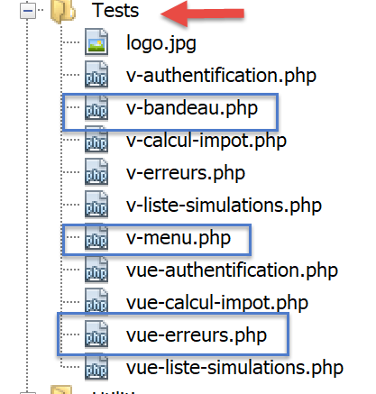
<?php
// calculate the view model
$modèle = getModelForThisView();
function getModelForThisView(): object {
// encapsulate paged data in $modèle
$modèle = new \stdClass();
…
// we return the model
return $modèle;
}
?>
<!-- document HTML -->
<!doctype html>
<html lang="fr">
<head>
<!-- Required meta tags -->
<meta charset="utf-8">
<meta name="viewport" content="width=device-width, initial-scale=1, shrink-to-fit=no">
<!-- Bootstrap CSS -->
<link rel="stylesheet" href="https://stackpath.bootstrapcdn.com/bootstrap/4.1.3/css/bootstrap.min.css" integrity="sha384-MCw98/SFnGE8fJT3GXwEOngsV7Zt27NXFoaoApmYm81iuXoPkFOJwJ8ERdknLPMO" crossorigin="anonymous">
<title>Application impots</title>
</head>
<body>
<div class="container">
<!-- bandeau sur 12 colonnes -->
<?php require "v-bandeau.php"; ?>
<!-- ligne à deux colonnes -->
<div class="row">
<!-- menu sur 3 colonnes-->
<div class="col-md-3">
<?php require "v-menu.php" ?>
</div>
<!-- liste des erreurs -->
<div class="col-md-9">
<?php
print <<<EOT
<div class="alert alert-danger" role="alert">
Les erreurs inattendues suivantes se sont produites :
<ul>$modèle->erreurs</ul>
</div>
EOT;
?>
</div>
</div>
</div>
</body>
</html>
Comments
- line 27: inclusion of the application banner [1];
- line 32: inclusion of the menu [2]. It will be displayed in three columns below the banner;
- lines 34–44: display of the error area across nine columns;
- lines 37–44: the [print] operation that displays unexpected errors;
- line 38: this display will appear in a Bootstrap container with a pink background;
- line 39: introductory text;
- line 40: the <ul> tag encloses a bulleted list. This bulleted list is provided by the [$model->errors] model;
We have already commented on the two fragments of this view:
23.13.5.2. Visual testing
We gather these various elements in the [Tests] folder and create a test template for the view [vue-erreurs.php]:

The data model for the view [vue-erreurs.php] will be as follows:
<?php
// calculate the view model
$modèle = getModelForThisView();
function getModelForThisView(): object {
// encapsulate paged data in $modèle
$modèle = new \stdClass();
// the table of unexpected errors
$erreurs = ["erreur1", "erreur2"];
// build the HTML list of errors
$modèle->erreurs = "";
foreach ($erreurs as $erreur) {
$modèle->erreurs .= "<li>$erreur</li>";
}
// menu options
$modèle->optionsMenu = [
"Calcul de l'impôt" => "main.php?action=afficher-calcul-impot",
"Liste des simulations" => "main.php?action=lister-simulations",
"Fin de session" => "main.php?action=fin-session",];
// banner image
$modèle->logo = "http://localhost/php7/scripts-web/impots/version-12/Tests/logo.jpg";
// we return the model
return $modèle;
}
?>
<!-- document HTML -->
<!doctype html>
<html lang="fr">
<head>
…
</head>
<body>
…
</body>
</html>
Comments
- lines 9–15: building the HTML error list;
- lines 17–20: the menu options array;
Let's display this view:

We get the following result:

We work on this view until we are satisfied with the visual result. We can then proceed to integrate the view into the web application currently under development.
23.13.5.3. Calculating the view model

Once the visual appearance of the view has been determined, we can proceed to calculate the view model under real-world conditions. Let’s review the state codes that lead to this view. They can be found in the configuration file:
"vues": {
"vue-authentification.php": [700, 221, 400],
"vue-calcul-impot.php": [200, 300, 341, 350, 800],
"vue-liste-simulations.php": [500, 600]
},
"vue-erreurs": "vue-erreurs.php"
Therefore, it is the status codes not listed in lines [2–4] that trigger the display of the unexpected errors view.
The code for calculating the view template [vue-erreurs.php] is as follows:
<?php
// we inherit the following variables
// Request $request : la requête en cours
// Session $session: the application session
// array $config: application configuration
// array $content: controller response
//
// symfony dependencies
use Symfony\Component\HttpFoundation\Request;
use Symfony\Component\HttpFoundation\Session\Session;
// calculate the view model
$modèle = getModelForThisView($request, $session, $config, $content);
function getModelForThisView(Request $request, Session $session, array $config, array $content): object {
// encapsulate paged data in $modèle
$modèle = new \stdClass();
// recover errors from the controller response
$réponse = $content["réponse"];
if (!is_array($réponse)) {
// a single error message
$erreurs = [$réponse];
} else {
// several error messages
$erreurs = $réponse;
}
// build the HTML list of errors
$modèle->erreurs = "";
foreach ($erreurs as $erreur) {
$modèle->erreurs .= "<li>$erreur</li>";
}
// menu options
$modèle->optionsMenu = [
"Calcul de l'impôt" => "main.php?action=afficher-calcul-impot",
"Liste des simulations" => "main.php?action=lister-simulations",
"Fin de session" => "main.php?action=fin-session",];
// we return the model
return $modèle;
}
?>
<!-- document HTML -->
<!doctype html>
<html lang="fr">
<head>
…
</head>
<body>
…
</body>
</html>
Comments
- lines 19–32: calculation of the template [$template→errors] used by the view [view-errors.php];
- lines 34-37: calculation of the template [$template→optionsMenu] used by the fragment [v-menu.php];
23.13.5.4. Tests [Postman]
The [calculate-tax-3xx] test returns status code 338, which is not an expected status code. The HTML response is as follows:

23.13.6. Implementation of the application menu actions
Here we will discuss the implementation of the menu actions. Let’s review the meaning of the links we’ve encountered
View | Link | Target | Role |
Tax Calculation | [List of simulations] | [main.php?action=list-simulations] | Request the list of simulations |
[End session] | [main.php?action=end-session] | ||
List of simulations | [Tax calculation] | [main.php?action=display-tax-calculation] | Display the tax calculation view |
[Log out] | [main.php?action=logout] | ||
Unexpected errors | [Tax calculation] | [main.php?action=display-tax-calculation] | Display the tax calculation view |
[List of simulations] | [main.php?action=list-simulations] | ||
[End session] | [main.php?action=end-session] |
It is important to note that clicking a link triggers a GET request to the link’s target. The actions [lister-simulations, fin-session] have been implemented using a GET operation, which allows us to use them as link targets. When the action is performed via a POST request, using a link is no longer possible unless it is combined with JavaScript.
From the actions above, it appears that the [display-tax-calculation] action has not yet been implemented. This is a navigation operation between two views: the JSON or XML server has no reason to implement it because they do not have the concept of a view. It is the HTML server that introduces this concept.
We therefore need to implement the [display-tax-calculation] action. This will allow us to review the procedure for implementing an action within the server.
First, we need to add a new secondary controller. We’ll call it [AfficherCalculImpotController]:
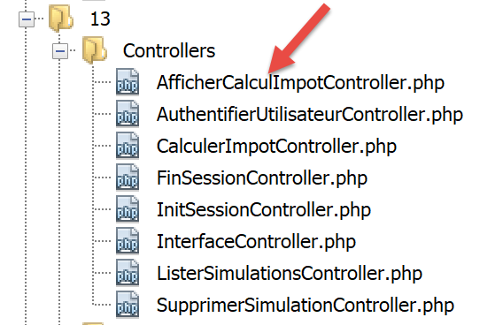
This controller must be added to the configuration file [config.json]:
{
"databaseFilename": "database.json",
"rootDirectory": "C:/myprograms/laragon-lite/www/php7/scripts-web/impots/version-12",
"relativeDependencies": [
…
"/Controllers/InterfaceController.php",
"/Controllers/InitSessionController.php",
"/Controllers/ListerSimulationsController.php",
"/Controllers/AuthentifierUtilisateurController.php",
"/Controllers/CalculerImpotController.php",
"/Controllers/SupprimerSimulationController.php",
"/Controllers/FinSessionController.php",
"/Controllers/AfficherCalculImpotController.php"
],
"absoluteDependencies": [
"C:/myprograms/laragon-lite/www/vendor/autoload.php",
"C:/myprograms/laragon-lite/www/vendor/predis/predis/autoload.php"
],
…
"actions":
{
"init-session": "\\InitSessionController",
"authentifier-utilisateur": "\\AuthentifierUtilisateurController",
"calculer-impot": "\\CalculerImpotController",
"lister-simulations": "\\ListerSimulationsController",
"supprimer-simulation": "\\SupprimerSimulationController",
"fin-session": "\\FinSessionController",
"afficher-calcul-impot": "\\AfficherCalculImpotController"
},
…
"vues": {
"vue-authentification.php": [700, 221, 400],
"vue-calcul-impot.php": [200, 300, 341, 350, 800],
"vue-liste-simulations.php": [500, 600]
},
"vue-erreurs": "vue-erreurs.php"
}
- line 15: the new controller;
- line 30: the new action and its controller;
- line 35: the new controller will return status code 800. When switching views, there can be no error;
The controller [AfficherCalculImpotController.php] will look like this:
<?php
namespace Application;
// symfony dependencies
use Symfony\Component\HttpFoundation\Request;
use Symfony\Component\HttpFoundation\Session\Session;
use Symfony\Component\HttpFoundation\Response;
class AfficherCalculImpotController implements InterfaceController {
// $config is the application configuration
// traitement d'une requête Request
// session and can modify it
// $infos is additional information specific to each controller
// renders an array [$statusCode, $état, $content, $headers]
public function execute(
array $config,
Request $request,
Session $session,
array $infos = NULL): array {
// view change - just a status code to set
return [Response::HTTP_OK, 800, ["réponse" => ""], []];
}
}
Comments
- line 10: like the other secondary controllers, the new controller implements the [InterfaceController] interface;
- View changes are easy to implement: simply return the status code associated with the target view, in this case code 800 as seen above;
23.13.7. Real-world testing
The code has been written and each action tested with [Postman]. We still need to test the view flow in a real-world scenario. We need a way to initialize the HTML session. We know we need to send the parameters [action=init-session&type=html] to the server. To avoid having to type them into the browser’s address bar, we’ll add the [index.php] script to our application:

The [index.php] script will be as follows:
<?php
// redirect to [main.php] in [html] mode
header('Location: main.php?action=init-session&type=html');
- Line 4: [header] is a PHP function that adds an HTTP header to the response. The HTTP header [Location: main.php?action=init-session&type=html] instructs the client browser to redirect to the target URL specified in [Location]. The [index.php] script is requested with the URL [http://localhost/php7/scripts-web/impots/version-12/index.php]. When the client browser receives the redirect to the relative URL [main.php?action=init-session&type=html], it will request the absolute URL [http://localhost/php7/scripts-web/impots/version-12/main.php?action=init-session&type=html] and the HTML session will start;
The startup URL can be simplified to [http://localhost/php7/scripts-web/impots/version-12/]. If no page is specified in the URL, the pages [index.html, index.php] are used by default. Here, the [index.php] script will therefore be used;
Let’s get started: we’ll now present a few view sequences.
In our browser, we enable developer tools (F12 in Firefox) and request the startup URL [https://localhost/php7/scripts-web/impots/version-12/]:

- At [4], the server’s first response is a 302 redirect:
- At [5], a new request is made to the URL [http://localhost/php7/scripts-web/impots/13/main.php?action=init-session&type=html];
Let’s take a closer look at the 302 redirect:

- in [8], the HTTP code [302] is a redirect code: the client browser is told that the requested URL has been moved. The new URL is specified in [9]. The browser will follow this redirect with a new GET request:

- in [12-13], the new request made by the browser;
Let’s fill out the form we received;

Then let’s run a few simulations:


Let’s request the list of simulations:

Delete the first simulation:
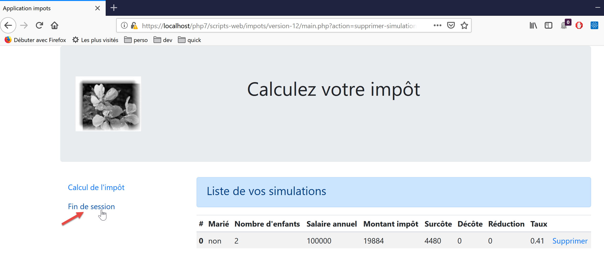
End the session:

The reader is invited to perform additional tests.
23.14. jSON Web Service Client
23.14.1. Client/server architecture

We will now focus on the JSON client [A] of the web service [B]. Client [A], like web service [B], has a layered structure:

This architecture is reflected in the following code organization:

Most of the classes have already been introduced and explained:
link paragraph. | |
link paragraph. | |
link paragraph. | |
paragraph link. | |
Paragraph link. | |
link paragraph. |
23.14.2. The [dao] layer

23.14.2.1. Interface
The interface for the [dao] layer will be as follows [InterfaceClientDao.php]:
<?php
// namespace
namespace Application;
interface InterfaceClientDao {
// reading taxpayer data
public function getTaxPayersData(string $taxPayersFilename, string $errorsFilename): array;
// calculating a taxpayer's taxes
public function calculerImpot(string $marié, int $enfants, int $salaire): Simulation;
// recording results
public function saveResults(string $resultsFilename, array $simulations): void;
// authentication
public function authentifierUtilisateur(String $user, string $password): void;
// list of simulations
public function listerSimulations(): array;
// delete a simulation
public function supprimerSimulation(int $numéro): array;
// start of session
public function initSession(string $type = 'json'): void;
// end of session
public function finSession(): void;
}
Comments
- line 9: the [getTaxPayersData] method allows you to use the JSON file containing taxpayer data. This method is implemented by the [TraitDao] trait, which has already been discussed (see the linked paragraph);
- line 15: the [saveResults] method saves the results of multiple tax calculations to a JSON file. Here too, this method is implemented by the [TraitDao] trait already discussed (link paragraph);
- Lines 12, 18, 21, 27, 30: A method has been created for each action accepted by the web service;
23.14.2.2. Implementation
The [InterfaceClientDao] interface is implemented by the following [ClientDao] class:
<?php
namespace Application;
// dependencies
use Symfony\Component\HttpClient\HttpClient;
use Symfony\Component\HttpClient\Response\CurlResponse;
class ClientDao implements InterfaceClientDao {
// using a Trait
use TraitDao;
// attributes
private $urlServer;
private $sessionCookie;
private $verbose;
// manufacturer
public function __construct(string $urlServer, bool $verbose = TRUE) {
$this->urlServer = $urlServer;
$this->verbose = $verbose;
}
…
}
Comments
- lines 18–21: the constructor receives two parameters:
- the URL [$urlServer] of the JSON web service;
- a boolean [$verbose] which, when set to TRUE, indicates that the class should display the server’s responses on the console;
- line 14: the session cookie. Its role was described in version 09 of the client (link paragraph);
- line 11: the class uses the trait [TraitDao], which implements two methods of the interface:
- [getTaxPayersData(string $taxPayersFilename, string $errorsFilename): array];
- [function calculateTax(string $married, int $children, int $salary): Simulation];
23.14.2.2.1. Method [initSession]
The [initSession] method is implemented as follows:
public function initSession(string $type = 'json'): void {
// create a HTTP customer
$httpClient = HttpClient::create();
// make the request to the server without authentication
$response = $httpClient->request('GET', $this->urlServer,
["query" => [
"action" => "init-session",
"type" => $type
],
"verify_peer" => false
]);
// the answer is retrieved
$this->getResponse($response);
// retrieve the session cookie
$headers = $response->getHeaders();
if (isset($headers["set-cookie"])) {
// session cookie ?
foreach ($headers["set-cookie"] as $cookie) {
$match = [];
$match = preg_match("/^PHPSESSID=(.+?);/", $cookie, $champs);
if ($match) {
$this->sessionCookie = "PHPSESSID=" . $champs[1];
}
}
}
}
Since the [init-session] action must be the first action requested from the web service, the [initSession] method will be the first method in the [dao] layer to be called.
Comments
- line 1: the desired session type is passed as a parameter. If no parameter is provided, a JSON session will be started;
- lines 5–11: A GET request is made to the web service;
- lines 7–8: the two GET parameters;
- line 10: In the case of secure communication (HTTPS), the security certificate sent by the web service will not be verified;
- line 13: the [getResponse] method retrieves the server’s response. It returns it as an array. Here, the result of the method is not used. The [getResponse] method throws an exception if the HTTP status code of the web service’s response is not 200 OK;
- Lines 14–25: Since the [initSession] method is the first method in the [dao] layer to be executed, we retrieve the session cookie so that subsequent methods can send it back to the web service. This code was already commented on in version 09;
23.14.2.2.2. The [getResponse] method
The [getResponse] method is responsible for processing the web service response:
private function getResponse(CurlResponse $response) {
// the answer is retrieved
$json = $response->getContent(false);
// logs
if ($this->verbose) {
print "$json\n";
}
// retrieve response status
$statusCode = $response->getStatusCode();
// mistake?
if ($statusCode !== 200) {
// we have an error
throw new ExceptionImpots($json);
}
// we give our answer
$array = json_decode($json, true);
return $array["réponse"];
}
Comments
- line 1: the method is private;
- line 1: the method’s parameter is the web service response of type [Symfony\Component\HttpClient\Response\CurlResponse], the Symfony response type, when [HttpClient] is implemented by [CurlClient], i.e., by the [curl] library;
- line 3: we retrieve the JSON response from the server. Note that the [false] parameter is there to prevent Symfony from throwing an exception when the server’s HTTP response status is in the range [3xx, 4xx, 5xx];
- lines 5–7: if we are in [$verbose] mode, then we display the server’s response on the console;
- lines 9–14: if the server’s HTTP response status is not 200, then an exception is thrown with the server’s JSON response as the error message;
- line 16: the JSON string is decoded into an array;
- line 17: the useful information is in [$array["response"]];
23.14.2.2.3. The [authenticateUser] method
The [authenticateUser] method is as follows:
public function authentifierUtilisateur(string $user, string $password): void {
// create a HTTP customer
$httpClient = HttpClient::create();
// make a request to the server with authentication
$response = $httpClient->request('POST', $this->urlServer,
["query" => [
"action" => "authentifier-utilisateur"
],
"body" => [
"user" => $user,
"password" => $password
],
"verify_peer" => false,
"headers" => ["Cookie" => $this->sessionCookie]
]);
// the answer is retrieved
$this->getResponse($response);
}
Comments
- line 5: the client's request is a POST;
- lines 6–8: parameters in the URL;
- lines 9–12: POST parameters;
- line 14: the session cookie;
- Line 17: We read the response. We know that if there is an error (an HTTP status code other than 200), the [getResponse] method throws an exception itself;
23.14.2.2.4. The [calculateTax] method
public function calculerImpot(string $marié, int $enfants, int $salaire): Simulation {
// create a HTTP customer
$httpClient = HttpClient::create();
// make the request to the server without authentication but with the session cookie
$response = $httpClient->request('POST', $this->urlServer,
["query" => [
"action" => "calculer-impot"],
"body" => [
"marié" => $marié,
"enfants" => $enfants,
"salaire" => $salaire
],
"verify_peer" => false,
"headers" => ["Cookie" => $this->sessionCookie]
]);
// the answer is retrieved
$array = $this->getResponse($response);
return (new Simulation())->setFromArrayOfAttributes($array);
}
Comments
- lines 6–7: the single URL parameter;
- lines 8–12: the three POST parameters (line 5);
- line 17: the response is processed;
- line 18: if we reach this point, it means the [getResponse] method did not throw an exception. We return a [Simulation] object initialized with the array returned by [getResponse];
23.14.2.2.5. The [listerSimulations] method
public function listerSimulations(): array {
// create a HTTP customer
$httpClient = HttpClient::create();
// make the request to the server without authentication but with the session cookie
$response = $httpClient->request('GET', $this->urlServer,
["query" => [
"action" => "lister-simulations"
],
"verify_peer" => false,
"headers" => ["Cookie" => $this->sessionCookie]
]);
// the answer is retrieved
return $this->getSimulations($response);
}
Comments
- line 5: GET method;
- lines 6–8: the single GET parameter;
- line 13: retrieving the simulations is handled by the private method [getSimulations];
23.14.2.2.6. The [getSimulations] method
private function getSimulations(CurlResponse $response): array {
// we retrieve the JSON response
$array = $this->getResponse($response);
// we have an array of associative objects
// we'll turn it into an array of Simulation objects
$simulations = [];
foreach ($array as $simulation) {
$simulations [] = (new Simulation())->setFromArrayOfAttributes($simulation);
}
// we render the Simulation object list
return $simulations;
}
Comments
- line 3: we retrieve the array from the response. It is an array of arrays, each of which has all the attributes of a [Simulation] object;
- line 6: if we reach this point, it means the [getResponse] method did not throw an exception;
- lines 6–9: we use the response to build an array of [Simulation] objects;
- line 11: we return this array;
23.14.2.2.7. The [DeleteSimulation] method
public function supprimerSimulation(int $numéro): array {
// create a HTTP customer
$httpClient = HttpClient::create();
// make the request to the server without authentication but with the session cookie
$response = $httpClient->request('GET', $this->urlServer,
["query" => [
"action" => "supprimer-simulation",
"numéro" => $numéro
],
"verify_peer" => false,
"headers" => ["Cookie" => $this->sessionCookie]
]);
// the answer is retrieved
return $this->getSimulations($response);
}
Comments
- line 5: a GET request is made;
- Lines 6–9: The two URL parameters;
- line 14: after a deletion, the server returns the new array of simulations. We return this array;
23.14.2.2.8. The [endSession] method
A session with the web service normally ends by calling the [finSession] method:
public function finSession(): void {
// create a HTTP customer
$httpClient = HttpClient::create();
// make the request to the server without authentication but with the session cookie
$response = $httpClient->request('GET', $this->urlServer,
["query" => [
"action" => "fin-session"
],
"verify_peer" => false,
"headers" => ["Cookie" => $this->sessionCookie]
]);
// the answer is retrieved
$this->getResponse($response);
}
Comments
- line 5: we make a GET request;
- lines 6–8: the single URL parameter;
- line 13: we read the response. An exception will be thrown if the HTTP status code of the response is not 200;
23.14.3. The [business] layer

23.14.3.1. The interface
The interface for the [business] layer is as follows [InterfaceClientMetier.php]:
<?php
// namespace
namespace Application;
interface InterfaceClientMetier {
// calculating a taxpayer's taxes
public function calculerImpot(string $marié, int $enfants, int $salaire): Simulation;
// batch mode tax calculation
public function executeBatchImpots(string $taxPayersFileName, string $resultsFilename, string $errorsFileName): void;
// authentication
public function authentifierUtilisateur(String $user, string $password): void;
// list of simulations
public function listerSimulations(): array;
// recording results
public function saveResults(string $resultsFilename, array $simulations): void;
// delete a simulation
public function supprimerSimulation(int $numéro): array;
// start of session
public function initSession(string $type = 'json'): void;
// end of session
public function finSession(): void;
}
Comments
- Only the [executeBatchImpots] method on line 12 is specific to the [business] layer. All others belong to the [DAO] layer, which implements them;
23.14.3.2. The [ClientMetier] class
The class implementing the [business] layer is as follows:
<?php
namespace Application;
class ClientMetier implements InterfaceClientMetier {
// attribute
private $clientDao;
// manufacturer
public function __construct(InterfaceClientDao $clientDao) {
$this->clientDao = $clientDao;
}
// tAX CALCULATION
public function calculerImpot(string $marié, int $enfants, int $salaire): Simulation {
return $this->clientDao->calculerImpot($marié, $enfants, $salaire);
}
// batch mode tax calculation
public function executeBatchImpots(string $taxPayersFileName, string $resultsFileName, string $errorsFileName): void {
// we let the exceptions coming from the [dao] layer flow upwards
// retrieve taxpayer data
$taxPayersData = $this->clientDao->getTaxPayersData($taxPayersFileName, $errorsFileName);
// results table
$simulations = [];
// we exploit them
foreach ($taxPayersData as $taxPayerData) {
// tax calculation
$simulations [] = $this->calculerImpot(
$taxPayerData->getMarié(),
$taxPayerData->getEnfants(),
$taxPayerData->getSalaire());
}
// recording results
if ($resultsFileName !== NULL) {
$this->clientDao->saveResults($resultsFileName, $simulations);
}
}
public function authentifierUtilisateur(String $user, string $password): void {
$this->clientDao->authentifierUtilisateur($user, $password);
}
public function listerSimulations(): array {
return $this->clientDao->listerSimulations();
}
public function saveResults(string $resultsFilename, array $simulations): void {
$this->clientDao->saveResults($resultsFilename, $simulations);
}
public function supprimerSimulation(int $numéro): array {
return $this->clientDao->supprimerSimulation($numéro);
}
public function finSession(): void {
$this->clientDao->finSession();
}
public function initSession(string $type = 'json'): void {
$this->clientDao->initSession($type);
}
}
Comments
- lines 10–12: To be constructed, the [business] layer needs a reference to the [DAO] layer;
- lines 20–38: only the [executeBatchImpots] method is specific to the [business] layer. The implementation of the other methods delegates the work to methods of the same names in the [DAO] layer;
- line 23: we call the [dao] layer to retrieve taxpayer data in an array of [TaxPayerData] objects;
- line 25: the various calculated simulations are accumulated in the [$simulations] array;
- lines 27–33: we calculate the tax for each taxpayer in the [$taxPayersData] array;
- lines 35–37: the results obtained in the [$simulations] array are saved to a JSON file;
Note: The [business] layer does almost nothing. We could decide to remove it and consolidate everything into the [DAO] layer.
23.14.4. The main script

The main script is configured by the following [config.json] file:
{
"taxPayersDataFileName": "Data/taxpayersdata.json",
"resultsFileName": "Data/results.json",
"errorsFileName": "Data/errors.json",
"rootDirectory": "C:/Data/st-2019/dev/php7/poly/scripts-console/impots/version-12",
"dependencies": [
"/Entities/BaseEntity.php",
"/Entities/TaxPayerData.php",
"/Entities/Simulation.php",
"/Entities/ExceptionImpots.php",
"/Utilities/Utilitaires.php",
"/Model/InterfaceClientDao.php",
"/Model/TraitDao.php",
"/Model/ClientDao.php",
"/Model/InterfaceClientMetier.php",
"/Model/ClientMetier.php"
],
"absoluteDependencies": [
"C:/myprograms/laragon-lite/www/vendor/autoload.php"
],
"user": {
"login": "admin",
"passwd": "admin"
},
"urlServer": "https://localhost:443/php7/scripts-web/impots/version-12/main.php"
}
The main script [main.php] is as follows:
<?php
// strict adherence to declared types of function parameters
declare(strict_types = 1);
// namespace
namespace Application;
// error handling by PHP
// ini_set("display_errors", "0");
//
// configuration file path
define("CONFIG_FILENAME", "../Data/config.json");
// we retrieve the configuration
$config = \json_decode(file_get_contents(CONFIG_FILENAME), true);
// include the necessary script dependencies
$rootDirectory = $config["rootDirectory"];
foreach ($config["dependencies"] as $dependency) {
require "$rootDirectory/$dependency";
}
// absolute dependencies (third-party libraries)
foreach ($config["absoluteDependencies"] as $dependency) {
require "$dependency";
}
// definition of constants
define("TAXPAYERSDATA_FILENAME", "$rootDirectory/{$config["taxPayersDataFileName"]}");
define("RESULTS_FILENAME", "$rootDirectory/{$config["resultsFileName"]}");
define("ERRORS_FILENAME", "$rootDirectory/{$config["errorsFileName"]}");
//
// symfony dependencies
use Symfony\Component\HttpClient\HttpClient;
// creation of the [dao] layer
$clientDao = new ClientDao($config["urlServer"]);
// creation of the [business] layer
$clientMetier = new ClientMetier($clientDao);
// tax calculation in batch mode
try {
// session initialization
$clientMetier->initSession('json');
// authentication
$clientMetier->authentifierUtilisateur($config["user"]["login"], $config["user"]["passwd"]);
// tax calculation without saving results
$clientMetier->executeBatchImpots(TAXPAYERSDATA_FILENAME, NULL, ERRORS_FILENAME);
// list of simulations
$clientMetier->listerSimulations();
// deleting a simulation
$simulations = $clientMetier->supprimerSimulation(1);
// saving results
$clientMetier->saveResults(RESULTS_FILENAME, $simulations);
// end of session
$clientMetier->finSession();
// action without being authenticated - must crash
$clientMetier->listerSimulations();
} catch (ExceptionImpots $ex) {
// error is displayed
print "Une erreur s'est produite : " . $ex->getMessage() . "\n";
}
// end
print "Terminé\n";
exit();
Comments
- lines 12-16: processing the configuration file [config.json];
- lines 18–26: loading all dependencies;
- lines 28–34: defining constants and aliases;
- lines 36–39: building the [dao] and [business] layers;
- line 44: initializing a JSON session;
- line 46: authenticating with the server;
- line 48: calculating the tax for a series of taxpayers. The results are not saved (2nd parameter set to NULL);
- line 50: retrieve the results of all these calculations;
- line 52: delete simulation #1 (the second one in the list);
- line 54: save the remaining simulations;
- line 56: the session is ended. This means the session cookie is deleted;
- line 58: we request the list of simulations. Since the session cookie has been deleted, authentication must be performed again. We should therefore get an exception stating that we are not authenticated;
The [taxpayersdata.json] file is as follows:
[
{
"marié": "oui",
"enfants": 2,
"salaire": 55555
},
{
"marié": "ouix",
"enfants": "2x",
"salaire": "55555x"
},
{
"marié": "oui",
"enfants": "2",
"salaire": 50000
},
{
"marié": "oui",
"enfants": 3,
"salaire": 50000
},
{
"marié": "non",
"enfants": 2,
"salaire": 100000
},
{
"marié": "non",
"enfants": 3,
"salaire": 100000
},
{
"marié": "oui",
"enfants": 3,
"salaire": 100000
},
{
"marié": "oui",
"enfants": 5,
"salaire": 100000
},
{
"marié": "non",
"enfants": 0,
"salaire": 100000
},
{
"marié": "oui",
"enfants": 2,
"salaire": 30000
},
{
"marié": "non",
"enfants": 0,
"salaire": 200000
},
{
"marié": "oui",
"enfants": 3,
"salaire": 20000
}
]
There are 12 taxpayers, 1 of whom is incorrect. That makes a total of 11 simulations. One of them will be removed. There should be 10 left.
After running the main script, the JSON file [results.json] looks like this:
[
{
"marié": "oui",
"enfants": "2",
"salaire": "55555",
"impôt": 2814,
"surcôte": 0,
"décôte": 0,
"réduction": 0,
"taux": 0.14
},
{
"marié": "oui",
"enfants": "3",
"salaire": "50000",
"impôt": 0,
"surcôte": 0,
"décôte": 720,
"réduction": 0,
"taux": 0.14
},
{
"marié": "non",
"enfants": "2",
"salaire": "100000",
"impôt": 19884,
"surcôte": 4480,
"décôte": 0,
"réduction": 0,
"taux": 0.41
},
{
"marié": "non",
"enfants": "3",
"salaire": "100000",
"impôt": 16782,
"surcôte": 7176,
"décôte": 0,
"réduction": 0,
"taux": 0.41
},
{
"marié": "oui",
"enfants": "3",
"salaire": "100000",
"impôt": 9200,
"surcôte": 2180,
"décôte": 0,
"réduction": 0,
"taux": 0.3
},
{
"marié": "oui",
"enfants": "5",
"salaire": "100000",
"impôt": 4230,
"surcôte": 0,
"décôte": 0,
"réduction": 0,
"taux": 0.14
},
{
"marié": "non",
"enfants": "0",
"salaire": "100000",
"impôt": 22986,
"surcôte": 0,
"décôte": 0,
"réduction": 0,
"taux": 0.41
},
{
"marié": "oui",
"enfants": "2",
"salaire": "30000",
"impôt": 0,
"surcôte": 0,
"décôte": 0,
"réduction": 0,
"taux": 0
},
{
"marié": "non",
"enfants": "0",
"salaire": "200000",
"impôt": 64210,
"surcôte": 7498,
"décôte": 0,
"réduction": 0,
"taux": 0.45
},
{
"marié": "oui",
"enfants": "3",
"salaire": "20000",
"impôt": 0,
"surcôte": 0,
"décôte": 0,
"réduction": 0,
"taux": 0
}
]
There are indeed 10 simulations.
The JSON file [errors.json] has the following content:
{
"numéro": 1,
"erreurs": [
{
"marié": "ouix"
},
{
"enfants": "2x"
},
{
"salaire": "55555x"
}
]
}
The console output is as follows (in verbose mode, the server's JSON responses are displayed on the console):
{"action":"init-session","état":700,"réponse":"session démarrée avec type [json]"}
{"action":"authentifier-utilisateur","état":200,"réponse":"Authentification réussie [admin, admin]"}
{"action":"calculer-impot","état":300,"réponse":{"marié":"oui","enfants":"2","salaire":"55555","impôt":2814,"surcôte":0,"décôte":0,"réduction":0,"taux":0.14}}
{"action":"calculer-impot","état":300,"réponse":{"marié":"oui","enfants":"2","salaire":"50000","impôt":1384,"surcôte":0,"décôte":384,"réduction":347,"taux":0.14}}
{"action":"calculer-impot","état":300,"réponse":{"marié":"oui","enfants":"3","salaire":"50000","impôt":0,"surcôte":0,"décôte":720,"réduction":0,"taux":0.14}}
{"action":"calculer-impot","état":300,"réponse":{"marié":"non","enfants":"2","salaire":"100000","impôt":19884,"surcôte":4480,"décôte":0,"réduction":0,"taux":0.41}}
{"action":"calculer-impot","état":300,"réponse":{"marié":"non","enfants":"3","salaire":"100000","impôt":16782,"surcôte":7176,"décôte":0,"réduction":0,"taux":0.41}}
{"action":"calculer-impot","état":300,"réponse":{"marié":"oui","enfants":"3","salaire":"100000","impôt":9200,"surcôte":2180,"décôte":0,"réduction":0,"taux":0.3}}
{"action":"calculer-impot","état":300,"réponse":{"marié":"oui","enfants":"5","salaire":"100000","impôt":4230,"surcôte":0,"décôte":0,"réduction":0,"taux":0.14}}
{"action":"calculer-impot","état":300,"réponse":{"marié":"non","enfants":"0","salaire":"100000","impôt":22986,"surcôte":0,"décôte":0,"réduction":0,"taux":0.41}}
{"action":"calculer-impot","état":300,"réponse":{"marié":"oui","enfants":"2","salaire":"30000","impôt":0,"surcôte":0,"décôte":0,"réduction":0,"taux":0}}
{"action":"calculer-impot","état":300,"réponse":{"marié":"non","enfants":"0","salaire":"200000","impôt":64210,"surcôte":7498,"décôte":0,"réduction":0,"taux":0.45}}
{"action":"calculer-impot","état":300,"réponse":{"marié":"oui","enfants":"3","salaire":"20000","impôt":0,"surcôte":0,"décôte":0,"réduction":0,"taux":0}}
{"action":"lister-simulations","état":500,"réponse":[{"marié":"oui","enfants":"2","salaire":"55555","impôt":2814,"surcôte":0,"décôte":0,"réduction":0,"taux":0.14,"arrayOfAttributes":null},{"marié":"oui","enfants":"2","salaire":"50000","impôt":1384,"surcôte":0,"décôte":384,"réduction":347,"taux":0.14,"arrayOfAttributes":null},{"marié":"oui","enfants":"3","salaire":"50000","impôt":0,"surcôte":0,"décôte":720,"réduction":0,"taux":0.14,"arrayOfAttributes":null},{"marié":"non","enfants":"2","salaire":"100000","impôt":19884,"surcôte":4480,"décôte":0,"réduction":0,"taux":0.41,"arrayOfAttributes":null},{"marié":"non","enfants":"3","salaire":"100000","impôt":16782,"surcôte":7176,"décôte":0,"réduction":0,"taux":0.41,"arrayOfAttributes":null},{"marié":"oui","enfants":"3","salaire":"100000","impôt":9200,"surcôte":2180,"décôte":0,"réduction":0,"taux":0.3,"arrayOfAttributes":null},{"marié":"oui","enfants":"5","salaire":"100000","impôt":4230,"surcôte":0,"décôte":0,"réduction":0,"taux":0.14,"arrayOfAttributes":null},{"marié":"non","enfants":"0","salaire":"100000","impôt":22986,"surcôte":0,"décôte":0,"réduction":0,"taux":0.41,"arrayOfAttributes":null},{"marié":"oui","enfants":"2","salaire":"30000","impôt":0,"surcôte":0,"décôte":0,"réduction":0,"taux":0,"arrayOfAttributes":null},{"marié":"non","enfants":"0","salaire":"200000","impôt":64210,"surcôte":7498,"décôte":0,"réduction":0,"taux":0.45,"arrayOfAttributes":null},{"marié":"oui","enfants":"3","salaire":"20000","impôt":0,"surcôte":0,"décôte":0,"réduction":0,"taux":0,"arrayOfAttributes":null}]}
{"action":"supprimer-simulation","état":600,"réponse":[{"marié":"oui","enfants":"2","salaire":"55555","impôt":2814,"surcôte":0,"décôte":0,"réduction":0,"taux":0.14,"arrayOfAttributes":null},{"marié":"oui","enfants":"3","salaire":"50000","impôt":0,"surcôte":0,"décôte":720,"réduction":0,"taux":0.14,"arrayOfAttributes":null},{"marié":"non","enfants":"2","salaire":"100000","impôt":19884,"surcôte":4480,"décôte":0,"réduction":0,"taux":0.41,"arrayOfAttributes":null},{"marié":"non","enfants":"3","salaire":"100000","impôt":16782,"surcôte":7176,"décôte":0,"réduction":0,"taux":0.41,"arrayOfAttributes":null},{"marié":"oui","enfants":"3","salaire":"100000","impôt":9200,"surcôte":2180,"décôte":0,"réduction":0,"taux":0.3,"arrayOfAttributes":null},{"marié":"oui","enfants":"5","salaire":"100000","impôt":4230,"surcôte":0,"décôte":0,"réduction":0,"taux":0.14,"arrayOfAttributes":null},{"marié":"non","enfants":"0","salaire":"100000","impôt":22986,"surcôte":0,"décôte":0,"réduction":0,"taux":0.41,"arrayOfAttributes":null},{"marié":"oui","enfants":"2","salaire":"30000","impôt":0,"surcôte":0,"décôte":0,"réduction":0,"taux":0,"arrayOfAttributes":null},{"marié":"non","enfants":"0","salaire":"200000","impôt":64210,"surcôte":7498,"décôte":0,"réduction":0,"taux":0.45,"arrayOfAttributes":null},{"marié":"oui","enfants":"3","salaire":"20000","impôt":0,"surcôte":0,"décôte":0,"réduction":0,"taux":0,"arrayOfAttributes":null}]}
{"action":"fin-session","état":400,"réponse":"session supprimée"}
{"action":"lister-simulations","état":103,"réponse":["pas de session en cours. Commencer par action [init-session]"]}
Une erreur s'est produite : {"action":"lister-simulations","état":103,"réponse":["pas de session en cours. Commencer par action [init-session]"]}
Terminé
23.14.5. Tests [Codeception]
As with previous clients, the version 12 client can be tested using [Codeception]:

The code for the test class of the client’s [business] layer is similar to that of the test classes for previous clients:
<?php
// strict adherence to declared types of function parameters
declare (strict_types=1);
// namespace
namespace Application;
// definition of constants
define("ROOT", "C:/Data/st-2019/dev/php7/poly/scripts-console/impots/version-12");
// configuration file path
define("CONFIG_FILENAME", ROOT . "/Data/config.json");
// we retrieve the configuration
$config = \json_decode(\file_get_contents(CONFIG_FILENAME), true);
// include the necessary script dependencies
$rootDirectory = $config["rootDirectory"];
foreach ($config["dependencies"] as $dependency) {
require "$rootDirectory$dependency";
}
// absolute dependencies (third-party libraries)
foreach ($config["absoluteDependencies"] as $dependency) {
require "$dependency";
}
// symfony dependencies
use Symfony\Component\HttpClient\HttpClient;
// test class
class ClientDaoTest extends \Codeception\Test\Unit {
// dao layer
private $clientDao;
public function __construct() {
parent::__construct();
// we retrieve the configuration
$config = \json_decode(\file_get_contents(CONFIG_FILENAME), true);
// creation of the [dao] layer
$clientDao = new ClientDao($config["urlServer"]);
// creation of the [business] layer
$this->métier = new ClientMetier($clientDao);
// session initialization
$this->métier->initSession("json");
// authentication
$this->métier->authentifierUtilisateur("admin", "admin");
}
// tests
public function test1() {
$simulation = $this->métier->calculerImpot("oui", 2, 55555);
$this->assertEqualsWithDelta(2815, $simulation->getImpôt(), 1);
$this->assertEqualsWithDelta(0, $simulation->getSurcôte(), 1);
$this->assertEqualsWithDelta(0, $simulation->getDécôte(), 1);
$this->assertEqualsWithDelta(0, $simulation->getRéduction(), 1);
$this->assertEquals(0.14, $simulation->getTaux());
}
public function test2() {
….
}
…
public function test11() {
…
}
}
Comments
- lines 34–46: note that the test class constructor is executed before each test;
- lines 38–41: construction of the [dao] and [business] layers;
- lines 42–45: the test methods [test1…, test11] test the [calculateTax] method. To make this possible, a JSON session must first be initialized and authentication performed;
The test results are as follows:

Many other tests should be performed:
- test the various methods of the [dao] layer;
- test the statuses returned by the web server. These statuses are important because their value determines which HTML page to display;